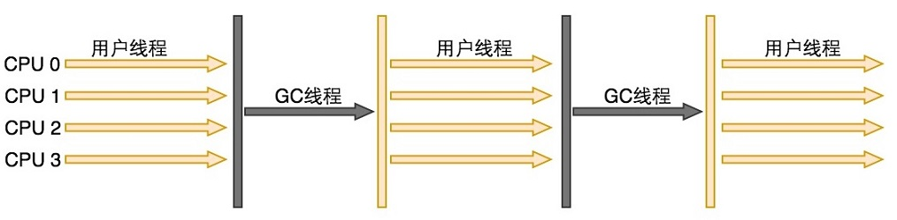
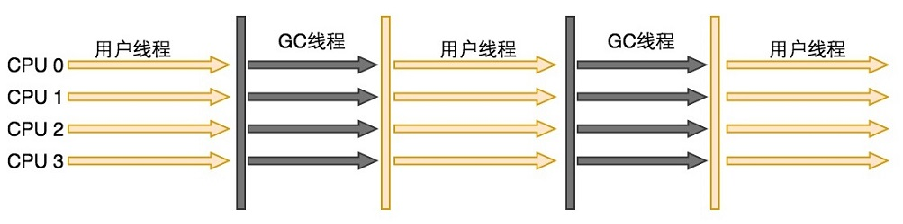
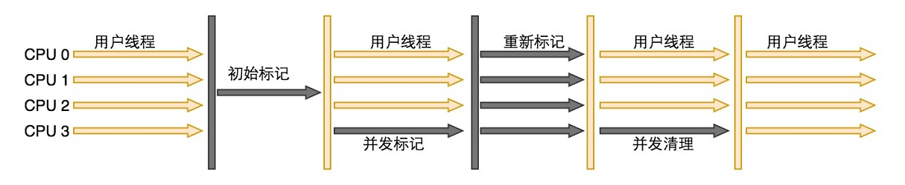
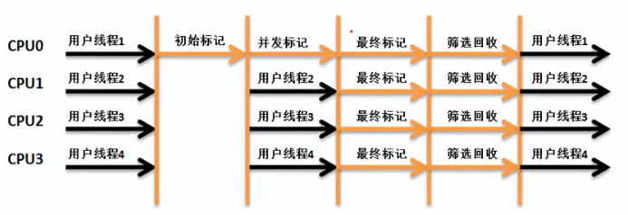

<!DOCTYPE html>
<html lang="en">
<head><meta name="generator" content="Hexo 3.9.0">
    <meta charset="utf-8">
    
    <title>
        垃圾收集器 |
        
        YingLong</title>
    
    
        <meta name="keywords" content="JVM">
    
    <meta name="viewport" content="width=device-width, initial-scale=1, maximum-scale=1">
    <meta name="description" content="垃圾收集器是内存回收的具体实现。Java虚拟机规范中对垃圾收集器应该如何实现并没有任何规定。 两者之间存在连线的收集器可以相互搭配使用，收集器所处区域表示其属于新生代收集器还是老年代收集器。  Serial收集器Serial收集器是最基本、发展历史最有悠久、基于复制算法、单线程的新生代收集器。单线程的意义并不仅仅是使用一个CPU或一条收集线程去完成垃圾收集工作，更重要的是在垃圾收集时必须暂停其他所">
<meta name="keywords" content="JVM">
<meta property="og:type" content="article">
<meta property="og:title" content="垃圾收集器">
<meta property="og:url" content="https://yaoyinglong.github.io/Blog/Java/VM/垃圾收集器/index.html">
<meta property="og:site_name" content="YingLong">
<meta property="og:description" content="垃圾收集器是内存回收的具体实现。Java虚拟机规范中对垃圾收集器应该如何实现并没有任何规定。 两者之间存在连线的收集器可以相互搭配使用，收集器所处区域表示其属于新生代收集器还是老年代收集器。  Serial收集器Serial收集器是最基本、发展历史最有悠久、基于复制算法、单线程的新生代收集器。单线程的意义并不仅仅是使用一个CPU或一条收集线程去完成垃圾收集工作，更重要的是在垃圾收集时必须暂停其他所">
<meta property="og:locale" content="en">
<meta property="og:image" content="https://yaoyinglong.github.io/images/JVM/HotSpot虚拟机垃圾收集器New.png">
<meta property="og:image" content="https://yaoyinglong.github.io/images/Serial收集器运行示意图.png">
<meta property="og:image" content="https://yaoyinglong.github.io/images/ParNew收集器运行示意图.png">
<meta property="og:image" content="https://yaoyinglong.github.io/images/Parallel%20Scavenge收集器运行示意图.png">
<meta property="og:image" content="https://yaoyinglong.github.io/images/Serial%20Old收集器运行示意图.png">
<meta property="og:image" content="https://yaoyinglong.github.io/images/Parallel%20Old收集器运行示意图.png">
<meta property="og:image" content="https://yaoyinglong.github.io/images/CMS收集器运行示意图.png">
<meta property="og:image" content="https://yaoyinglong.github.io/images/JVM/新生代老年代不再物理隔离.png">
<meta property="og:image" content="https://yaoyinglong.github.io/images/JVM/G1%20Region.png">
<meta property="og:image" content="https://yaoyinglong.github.io/images/G1收集器运行示意图.png">
<meta property="og:image" content="https://yaoyinglong.github.io/images/JVM/ZGC堆Region.png">
<meta property="og:image" content="https://yaoyinglong.github.io/images/JVM/UMA-and-NUMA.png">
<meta property="og:image" content="https://yaoyinglong.github.io/images/JVM/颜色指针.png">
<meta property="og:image" content="https://yaoyinglong.github.io/images/JVM/Load%20Barrier.png">
<meta property="og:image" content="https://yaoyinglong.github.io/images/JVM/ZGC收集器运行示意图.png">
<meta property="og:image" content="https://yaoyinglong.github.io/images/JVM/三色标记.png">
<meta property="og:image" content="https://yaoyinglong.github.io/images/JVM/记忆集-卡表.png">
<meta property="og:updated_time" content="2022-01-03T13:01:28.412Z">
<meta name="twitter:card" content="summary">
<meta name="twitter:title" content="垃圾收集器">
<meta name="twitter:description" content="垃圾收集器是内存回收的具体实现。Java虚拟机规范中对垃圾收集器应该如何实现并没有任何规定。 两者之间存在连线的收集器可以相互搭配使用，收集器所处区域表示其属于新生代收集器还是老年代收集器。  Serial收集器Serial收集器是最基本、发展历史最有悠久、基于复制算法、单线程的新生代收集器。单线程的意义并不仅仅是使用一个CPU或一条收集线程去完成垃圾收集工作，更重要的是在垃圾收集时必须暂停其他所">
<meta name="twitter:image" content="https://yaoyinglong.github.io/images/JVM/HotSpot虚拟机垃圾收集器New.png">
    

    

    
        <link rel="icon" href="/favicon.ico">
    

    <link rel="stylesheet" href="/libs/font-awesome/css/font-awesome.min.css">
    <link rel="stylesheet" href="/libs/open-sans/styles.css">
    <link rel="stylesheet" href="/libs/source-code-pro/styles.css">

    <link rel="stylesheet" href="/css/style.css">
    <script src="/libs/jquery/2.1.3/jquery.min.js"></script>
    <script src="/libs/jquery/plugins/cookie/1.4.1/jquery.cookie.js"></script>
    
    
        <link rel="stylesheet" href="/libs/lightgallery/css/lightgallery.min.css">
    
    
        <link rel="stylesheet" href="/libs/justified-gallery/justifiedGallery.min.css">
    
    
    
    


</head>
</html>
<body>
<div id="container">
    <header id="header">
    <div id="header-main" class="header-inner">
        <div class="outer">
            <a href="/" id="logo">
                <i class="logo"></i>
                <span class="site-title">YingLong</span>
            </a>
            <nav id="main-nav">
                
                    <a class="main-nav-link" href="/">Home</a>
                
                    <a class="main-nav-link" href="/archives">Archives</a>
                
                    <a class="main-nav-link" href="/categories">Categories</a>
                
                    <a class="main-nav-link" href="/tags">Tags</a>
                
                    <a class="main-nav-link" href="/about">About</a>
                
                <a class="main-nav-link" href="javascript:trigger()">Reading</a>
            </nav>
            
            <div id="search-form-wrap">
    
        <form class="search-form">
            <input type="text" class="ins-search-input search-form-input" placeholder="Search">
            <button type="submit" class="search-form-submit"></button>
        </form>
        <div class="ins-search">
    <div class="ins-search-mask"></div>
    <div class="ins-search-container">
        <div class="ins-input-wrapper">
            <input type="text" class="ins-search-input" placeholder="Type something...">
            <span class="ins-close ins-selectable"><i class="fa fa-times-circle"></i></span>
        </div>
        <div class="ins-section-wrapper">
            <div class="ins-section-container"></div>
        </div>
    </div>
</div>
<script>
    (function (window) {
        var INSIGHT_CONFIG = {
            TRANSLATION: {
                POSTS: 'Posts',
                PAGES: 'Pages',
                CATEGORIES: 'Categories',
                TAGS: 'Tags',
                UNTITLED: '(Untitled)',
            },
            ROOT_URL: '/',
            CONTENT_URL: '/content.json',
        };
        window.INSIGHT_CONFIG = INSIGHT_CONFIG;
    })(window);
</script>
<script src="/js/insight.js"></script>
    
</div>
        </div>
    </div>
    <div id="main-nav-mobile" class="header-sub header-inner">
        <table class="menu outer">
            <tr>
                
                    <td><a class="main-nav-link" href="/">Home</a></td>
                
                    <td><a class="main-nav-link" href="/archives">Archives</a></td>
                
                    <td><a class="main-nav-link" href="/categories">Categories</a></td>
                
                    <td><a class="main-nav-link" href="/tags">Tags</a></td>
                
                    <td><a class="main-nav-link" href="/about">About</a></td>
                
                <td>
                    
    <div class="search-form">
        <input type="text" class="ins-search-input search-form-input" placeholder="Search">
    </div>

                </td>
            </tr>
        </table>
    </div>
</header>
<script type="text/javascript">
    var index = 0
    trigger = function () {
        if (index % 2 == 0) {
            $("#sidebar").css("display", "none");
            $("#main").css("float", "none");
        } else {
            $("#sidebar").css("display", "inline");
            $("#main").css("float", "left");
        }
        index++
    }
</script>

    <div class="outer">
        
        
            <aside id="sidebar">
    
        
    <div class="widget-wrap" id="categories">
        <h3 class="widget-title">
            <span>categories</span>
            &nbsp;
            <a id="allExpand" href="#">
                <i class="fa fa-angle-double-down fa-2x"></i>
            </a>
        </h3>

        
        
        
            <ul class="unstyled" id="tree">
                
                    <li class="directory">
                        <a href="#" data-role="directory">
                            <i class="fa fa-folder"></i>
                            &nbsp;
                            Cloud
                        </a>
                        
            <ul class="unstyled" id="tree">
                
                    <li class="directory">
                        <a href="#" data-role="directory">
                            <i class="fa fa-folder"></i>
                            &nbsp;
                            Dubbo
                        </a>
                        
            <ul class="unstyled" id="tree">
                
                    <li class="file"><a href="/Blog/Cloud/Dubbo/Dubbo基础/">Dubbo基础</a></li>
                
                    <li class="file"><a href="/Blog/Cloud/Dubbo/Dubbo服务调用/">Dubbo服务调用</a></li>
                
                    <li class="file"><a href="/Blog/Cloud/Dubbo/SPI机制源码/">SPI机制源码</a></li>
                
                    <li class="file"><a href="/Blog/Cloud/Dubbo/Dubbo服务引入/">Dubbo服务引入</a></li>
                
                    <li class="file"><a href="/Blog/Cloud/Dubbo/Dubbo服务导出/">Dubbo服务导出</a></li>
                
                    <li class="file"><a href="/Blog/Cloud/Dubbo/Dubbo与Spring集成原理/">Dubbo与Spring集成原理</a></li>
                
            </ul>
        
                    </li>
                
                    <li class="directory">
                        <a href="#" data-role="directory">
                            <i class="fa fa-folder"></i>
                            &nbsp;
                            ELK
                        </a>
                        
            <ul class="unstyled" id="tree">
                
                    <li class="file"><a href="/Blog/Cloud/ELK/ElasticSearch基础/">ElasticSearch基础</a></li>
                
                    <li class="file"><a href="/Blog/Cloud/ELK/ElasticSearch实战/">ElasticSearch实战</a></li>
                
                    <li class="file"><a href="/Blog/Cloud/ELK/ElasticSearch进阶/">ElasticSearch进阶</a></li>
                
            </ul>
        
                    </li>
                
                    <li class="directory">
                        <a href="#" data-role="directory">
                            <i class="fa fa-folder"></i>
                            &nbsp;
                            MQ
                        </a>
                        
            <ul class="unstyled" id="tree">
                
                    <li class="file"><a href="/Blog/Cloud/MQ/Kafka基础/">Kafka基础</a></li>
                
                    <li class="file"><a href="/Blog/Cloud/MQ/RabbitMQ高级特性及Spring集成/">RabbitMQ高级特性及Spring集成</a></li>
                
                    <li class="file"><a href="/Blog/Cloud/MQ/RabbitMQ基础/">RabbitMQ基础</a></li>
                
                    <li class="file"><a href="/Blog/Cloud/MQ/RocketMQ消息存储源码/">RocketMQ消息存储源码</a></li>
                
                    <li class="file"><a href="/Blog/Cloud/MQ/RocketMQ高级特性/">RocketMQ高级特性</a></li>
                
                    <li class="file"><a href="/Blog/Cloud/MQ/RocketMQ基础/">RocketMQ基础</a></li>
                
                    <li class="file"><a href="/Blog/Cloud/MQ/RocketMQ消费者源码/">RocketMQ消费者源码</a></li>
                
                    <li class="file"><a href="/Blog/Cloud/MQ/RocketMQ生产者源码/">RocketMQ生产者源码</a></li>
                
            </ul>
        
                    </li>
                
                    <li class="directory">
                        <a href="#" data-role="directory">
                            <i class="fa fa-folder"></i>
                            &nbsp;
                            Nacos
                        </a>
                        
            <ul class="unstyled" id="tree">
                
                    <li class="file"><a href="/Blog/Cloud/Nacos/Nacos Client原理/">Nacos Client原理</a></li>
                
                    <li class="file"><a href="/Blog/Cloud/Nacos/Nacos Server原理/">Nacos Server原理</a></li>
                
                    <li class="file"><a href="/Blog/Cloud/Nacos/Nacos问题总结/">Nacos问题总结</a></li>
                
                    <li class="file"><a href="/Blog/Cloud/Nacos/Nacos集群CP模式/">Nacos集群CP模式</a></li>
                
                    <li class="file"><a href="/Blog/Cloud/Nacos/Nacos配置中心Server原理/">Nacos配置中心Server原理</a></li>
                
                    <li class="file"><a href="/Blog/Cloud/Nacos/Nacos集群成员信息同步/">Nacos集群成员信息同步</a></li>
                
                    <li class="file"><a href="/Blog/Cloud/Nacos/Nacos集群注册服务同步/">Nacos集群注册服务同步</a></li>
                
                    <li class="file"><a href="/Blog/Cloud/Nacos/Nacos配置中心Client原理/">Nacos配置中心Client原理</a></li>
                
            </ul>
        
                    </li>
                
                    <li class="directory">
                        <a href="#" data-role="directory">
                            <i class="fa fa-folder"></i>
                            &nbsp;
                            Netty
                        </a>
                        
            <ul class="unstyled" id="tree">
                
                    <li class="file"><a href="/Blog/Cloud/Netty/IO模型基础/">IO模型基础</a></li>
                
                    <li class="file"><a href="/Blog/Cloud/Netty/Netty基础/">Netty基础</a></li>
                
                    <li class="file"><a href="/Blog/Cloud/Netty/Netty源码/">Netty源码</a></li>
                
                    <li class="file"><a href="/Blog/Cloud/Netty/Netty进阶/">Netty进阶</a></li>
                
            </ul>
        
                    </li>
                
                    <li class="directory">
                        <a href="#" data-role="directory">
                            <i class="fa fa-folder"></i>
                            &nbsp;
                            Redis
                        </a>
                        
            <ul class="unstyled" id="tree">
                
                    <li class="file"><a href="/Blog/Cloud/Redis/Redis分布式锁实现/">Redis分布式锁实现</a></li>
                
                    <li class="file"><a href="/Blog/Cloud/Redis/Redis缓存及性能优化/">Redis缓存及性能优化</a></li>
                
                    <li class="file"><a href="/Blog/Cloud/Redis/Redis基础/">Redis基础</a></li>
                
                    <li class="file"><a href="/Blog/Cloud/Redis/Redis集群架构/">Redis集群架构</a></li>
                
            </ul>
        
                    </li>
                
                    <li class="directory">
                        <a href="#" data-role="directory">
                            <i class="fa fa-folder"></i>
                            &nbsp;
                            Seata
                        </a>
                        
            <ul class="unstyled" id="tree">
                
                    <li class="file"><a href="/Blog/Cloud/Seata/Seata集成原理/">Seata集成原理</a></li>
                
                    <li class="file"><a href="/Blog/Cloud/Seata/Seata分布式事务原理/">Seata分布式事务原理</a></li>
                
            </ul>
        
                    </li>
                
                    <li class="directory">
                        <a href="#" data-role="directory">
                            <i class="fa fa-folder"></i>
                            &nbsp;
                            Sentinel
                        </a>
                        
            <ul class="unstyled" id="tree">
                
                    <li class="file"><a href="/Blog/Cloud/Sentinel/Sentinel配置持久化/">Sentinel配置持久化</a></li>
                
                    <li class="file"><a href="/Blog/Cloud/Sentinel/Sentinel规则发布源码/">Sentinel规则发布源码</a></li>
                
                    <li class="file"><a href="/Blog/Cloud/Sentinel/常见限流算法/">常见限流算法</a></li>
                
                    <li class="file"><a href="/Blog/Cloud/Sentinel/Sentinel限流熔断降级源码/">Sentinel限流熔断降级源码</a></li>
                
            </ul>
        
                    </li>
                
                    <li class="directory">
                        <a href="#" data-role="directory">
                            <i class="fa fa-folder"></i>
                            &nbsp;
                            Zookeeper
                        </a>
                        
            <ul class="unstyled" id="tree">
                
                    <li class="file"><a href="/Blog/Cloud/Zookeeper/Zookeeper基础/">Zookeeper基础</a></li>
                
                    <li class="file"><a href="/Blog/Cloud/Zookeeper/Zookeeper客户端之ZAB/">Zookeeper客户端之ZAB</a></li>
                
                    <li class="file"><a href="/Blog/Cloud/Zookeeper/Zookeeper集群Leader选举/">Zookeeper集群Leader选举</a></li>
                
                    <li class="file"><a href="/Blog/Cloud/Zookeeper/Zookeeper服务端之ZAB/">Zookeeper服务端之ZAB</a></li>
                
            </ul>
        
                    </li>
                
                    <li class="directory">
                        <a href="#" data-role="directory">
                            <i class="fa fa-folder"></i>
                            &nbsp;
                            网关
                        </a>
                        
            <ul class="unstyled" id="tree">
                
                    <li class="file"><a href="/Blog/Cloud/网关/Gateway源码/">Gateway源码</a></li>
                
            </ul>
        
                    </li>
                
                    <li class="file"><a href="/Blog/Cloud/Feign集成原理/">Feign集成原理</a></li>
                
                    <li class="file"><a href="/Blog/Cloud/Canal基础/">Canal基础</a></li>
                
                    <li class="file"><a href="/Blog/Cloud/Ribbon集成原理/">Ribbon集成原理</a></li>
                
                    <li class="file"><a href="/Blog/Cloud/分布式事务解决方案/">分布式事务解决方案</a></li>
                
                    <li class="file"><a href="/Blog/Cloud/分布式系统常见问题/">分布式系统常见问题</a></li>
                
                    <li class="file"><a href="/Blog/Cloud/秒杀问题及解决方案/">秒杀问题及解决方案</a></li>
                
            </ul>
        
                    </li>
                
                    <li class="directory">
                        <a href="#" data-role="directory">
                            <i class="fa fa-folder"></i>
                            &nbsp;
                            DB
                        </a>
                        
            <ul class="unstyled" id="tree">
                
                    <li class="file"><a href="/Blog/DB/Explain工具/">Explain工具</a></li>
                
                    <li class="file"><a href="/Blog/DB/MongoDB基础/">MongoDB基础</a></li>
                
                    <li class="file"><a href="/Blog/DB/MVCC与BufferPool缓存机制/">MVCC与BufferPool缓存机制</a></li>
                
                    <li class="file"><a href="/Blog/DB/MySQL主从架构/">MySQL主从架构</a></li>
                
                    <li class="file"><a href="/Blog/DB/MySQL事务隔离级别与锁机制/">MySQL事务隔离级别与锁机制</a></li>
                
                    <li class="file"><a href="/Blog/DB/MySQL内部组件结构/">MySQL内部组件结构</a></li>
                
                    <li class="file"><a href="/Blog/DB/MySQL基础/">MySQL基础</a></li>
                
                    <li class="file"><a href="/Blog/DB/MySQL常用SQL总结/">MySQL常用SQL总结</a></li>
                
                    <li class="file"><a href="/Blog/DB/ShardingSphere基础/">ShardingSphere基础</a></li>
                
                    <li class="file"><a href="/Blog/DB/分库分表/">分库分表</a></li>
                
                    <li class="file"><a href="/Blog/DB/索引优化一/">索引优化一</a></li>
                
                    <li class="file"><a href="/Blog/DB/索引优化三/">索引优化三</a></li>
                
                    <li class="file"><a href="/Blog/DB/索引优化二/">索引优化二</a></li>
                
                    <li class="file"><a href="/Blog/DB/索引的原理与使用/">索引的原理与使用</a></li>
                
            </ul>
        
                    </li>
                
                    <li class="directory open">
                        <a href="#" data-role="directory">
                            <i class="fa fa-folder-open"></i>
                            &nbsp;
                            Java
                        </a>
                        
            <ul class="unstyled" id="tree">
                
                    <li class="directory open">
                        <a href="#" data-role="directory">
                            <i class="fa fa-folder-open"></i>
                            &nbsp;
                            VM
                        </a>
                        
            <ul class="unstyled" id="tree">
                
                    <li class="file"><a href="/Blog/Java/VM/JVM内存池/">JVM内存池</a></li>
                
                    <li class="file"><a href="/Blog/Java/VM/Minor&Major&Full GC/">Minor&Major&Full GC</a></li>
                
                    <li class="file"><a href="/Blog/Java/VM/Class文件结构/">Class文件结构</a></li>
                
                    <li class="file"><a href="/Blog/Java/VM/Java内存区域/">Java内存区域</a></li>
                
                    <li class="file"><a href="/Blog/Java/VM/OutOfMemoryError异常/">OOM异常实验</a></li>
                
                    <li class="file"><a href="/Blog/Java/VM/内存非配与回收策略/">内存分配与回收策略</a></li>
                
                    <li class="file active"><a href="/Blog/Java/VM/垃圾收集器/">垃圾收集器</a></li>
                
                    <li class="file"><a href="/Blog/Java/VM/堆中对象分配&布局&访问/">堆中对象分配&布局&访问</a></li>
                
                    <li class="file"><a href="/Blog/Java/VM/垃圾收集算法/">垃圾收集算法及实现</a></li>
                
                    <li class="file"><a href="/Blog/Java/VM/字节码指令/">字节码指令</a></li>
                
                    <li class="file"><a href="/Blog/Java/VM/字节码指令手册/">字节码指令手册</a></li>
                
                    <li class="file"><a href="/Blog/Java/VM/对象是否存活/">对象是否存活</a></li>
                
                    <li class="file"><a href="/Blog/Java/VM/方法调用/">方法调用</a></li>
                
                    <li class="file"><a href="/Blog/Java/VM/属性表集合/">属性表集合</a></li>
                
                    <li class="file"><a href="/Blog/Java/VM/常量池/">常量池</a></li>
                
                    <li class="file"><a href="/Blog/Java/VM/理解GC日志/">理解GC日志</a></li>
                
                    <li class="file"><a href="/Blog/Java/VM/类加载器/">类加载器</a></li>
                
                    <li class="file"><a href="/Blog/Java/VM/运行时栈帧结构/">运行时栈帧结构</a></li>
                
                    <li class="file"><a href="/Blog/Java/VM/类加载过程/">类加载过程</a></li>
                
            </ul>
        
                    </li>
                
                    <li class="directory">
                        <a href="#" data-role="directory">
                            <i class="fa fa-folder"></i>
                            &nbsp;
                            基础
                        </a>
                        
            <ul class="unstyled" id="tree">
                
                    <li class="file"><a href="/Blog/Java/基础/HashMap源码分析JDK8/">HashMap源码分析JDK8</a></li>
                
                    <li class="file"><a href="/Blog/Java/基础/Java实用工具库/">Java实用工具库</a></li>
                
                    <li class="file"><a href="/Blog/Java/基础/HashMap源码分析JDK7/">HashMap源码分析JDK7</a></li>
                
                    <li class="file"><a href="/Blog/Java/基础/lambda常用总结/">lambda常用总结</a></li>
                
                    <li class="file"><a href="/Blog/Java/基础/位运算/">位运算</a></li>
                
                    <li class="file"><a href="/Blog/Java/基础/PriorityQueue源码/">PriorityQueue源码</a></li>
                
                    <li class="file"><a href="/Blog/Java/基础/动态代理/">动态代理</a></li>
                
                    <li class="file"><a href="/Blog/Java/基础/反射基础/">反射基础</a></li>
                
                    <li class="file"><a href="/Blog/Java/基础/时间及日期总结/">Java8时间及日期</a></li>
                
                    <li class="file"><a href="/Blog/Java/基础/注解实现及应用/">注解实现及应用</a></li>
                
            </ul>
        
                    </li>
                
                    <li class="directory">
                        <a href="#" data-role="directory">
                            <i class="fa fa-folder"></i>
                            &nbsp;
                            工具
                        </a>
                        
            <ul class="unstyled" id="tree">
                
                    <li class="file"><a href="/Blog/Java/工具/Java中调用Groovy脚本/">Java中调用Groovy脚本</a></li>
                
                    <li class="file"><a href="/Blog/Java/工具/JAVA实用工具/">JAVA实用工具</a></li>
                
                    <li class="file"><a href="/Blog/Java/工具/国密SM2/">国密SM2</a></li>
                
                    <li class="file"><a href="/Blog/Java/工具/国密SM4/">国密SM4</a></li>
                
            </ul>
        
                    </li>
                
                    <li class="directory">
                        <a href="#" data-role="directory">
                            <i class="fa fa-folder"></i>
                            &nbsp;
                            并发
                        </a>
                        
            <ul class="unstyled" id="tree">
                
                    <li class="file"><a href="/Blog/Java/并发/BlockingQueue阻塞队列二/">BlockingQueue阻塞队列二</a></li>
                
                    <li class="file"><a href="/Blog/Java/并发/AQS与ReentrantLock/">AQS与ReentrantLock</a></li>
                
                    <li class="file"><a href="/Blog/Java/并发/Callable与Future/">Callable与Future</a></li>
                
                    <li class="file"><a href="/Blog/Java/并发/ConcurrentHashMap源码JDK7/">ConcurrentHashMap源码JDK7</a></li>
                
                    <li class="file"><a href="/Blog/Java/并发/Condition原理/">Condition原理</a></li>
                
                    <li class="file"><a href="/Blog/Java/并发/Java内存模型/">Java内存模型</a></li>
                
                    <li class="file"><a href="/Blog/Java/并发/ConcurrentHashMap源码JDK8/">ConcurrentHashMap源码JDK8</a></li>
                
                    <li class="file"><a href="/Blog/Java/并发/Java与线程/">Java与线程</a></li>
                
                    <li class="file"><a href="/Blog/Java/并发/BlockingQueue阻塞队列一/">BlockingQueue阻塞队列一</a></li>
                
                    <li class="file"><a href="/Blog/Java/并发/ReentrantReadWriteLock原理/">ReentrantReadWriteLock原理</a></li>
                
                    <li class="file"><a href="/Blog/Java/并发/ScheduledThreadPoolExecutor/">ScheduledThreadPoolExecutor</a></li>
                
                    <li class="file"><a href="/Blog/Java/并发/Synchronized总结/">Synchronized总结</a></li>
                
                    <li class="file"><a href="/Blog/Java/并发/ThreadLocal原理/">ThreadLocal原理</a></li>
                
                    <li class="file"><a href="/Blog/Java/并发/原子性、可见性、有序性/">原子性、可见性、有序性</a></li>
                
                    <li class="file"><a href="/Blog/Java/并发/Unsafe应用/">Unsafe应用</a></li>
                
                    <li class="file"><a href="/Blog/Java/并发/Volatile原理/">Volatile原理</a></li>
                
                    <li class="file"><a href="/Blog/Java/并发/线程安全/">线程安全</a></li>
                
                    <li class="file"><a href="/Blog/Java/并发/线程安全实现方式/">线程安全实现方式</a></li>
                
                    <li class="file"><a href="/Blog/Java/并发/同步工具类/">同步工具类</a></li>
                
                    <li class="file"><a href="/Blog/Java/并发/锁优化/">锁优化</a></li>
                
                    <li class="file"><a href="/Blog/Java/并发/线程池原理/">线程池原理</a></li>
                
                    <li class="file"><a href="/Blog/Java/并发/操作系统底层/">操作系统底层</a></li>
                
            </ul>
        
                    </li>
                
                    <li class="file"><a href="/Blog/Java/JVM内存参数设置/">JVM内存参数设置</a></li>
                
                    <li class="file"><a href="/Blog/Java/JVM调优工具/">JVM调优工具</a></li>
                
                    <li class="file"><a href="/Blog/Java/JVM整体概览/">JVM整体概览</a></li>
                
                    <li class="file"><a href="/Blog/Java/JVM调优思路/">JVM调优思路</a></li>
                
            </ul>
        
                    </li>
                
                    <li class="directory">
                        <a href="#" data-role="directory">
                            <i class="fa fa-folder"></i>
                            &nbsp;
                            Maven
                        </a>
                        
            <ul class="unstyled" id="tree">
                
                    <li class="file"><a href="/Blog/Maven/Maven仓库/">Maven仓库</a></li>
                
                    <li class="file"><a href="/Blog/Maven/Maven Assembly标签全解/">Maven Assembly标签全解</a></li>
                
                    <li class="file"><a href="/Blog/Maven/Maven基础/">Maven基础</a></li>
                
                    <li class="file"><a href="/Blog/Maven/Maven加密JAR包/">Maven加密JAR包</a></li>
                
                    <li class="file"><a href="/Blog/Maven/Maven个性化打包/">Maven个性化打包</a></li>
                
                    <li class="file"><a href="/Blog/Maven/Maven属性/">Maven属性</a></li>
                
                    <li class="file"><a href="/Blog/Maven/Maven常用/">Maven常用</a></li>
                
                    <li class="file"><a href="/Blog/Maven/Maven常用工具/">Maven常用工具</a></li>
                
                    <li class="file"><a href="/Blog/Maven/Maven常见问题总结/">Maven常见问题总结</a></li>
                
                    <li class="file"><a href="/Blog/Maven/Maven常用插件/">Maven常用插件</a></li>
                
                    <li class="file"><a href="/Blog/Maven/Maven插件基础/">Maven插件基础</a></li>
                
                    <li class="file"><a href="/Blog/Maven/Maven插件编写/">Maven插件编写</a></li>
                
                    <li class="file"><a href="/Blog/Maven/Maven标签全解/">Maven标签全解</a></li>
                
                    <li class="file"><a href="/Blog/Maven/Maven生命周期/">Maven生命周期</a></li>
                
                    <li class="file"><a href="/Blog/Maven/Maven聚合与继承/">Maven聚合与继承</a></li>
                
            </ul>
        
                    </li>
                
                    <li class="directory">
                        <a href="#" data-role="directory">
                            <i class="fa fa-folder"></i>
                            &nbsp;
                            Spring
                        </a>
                        
            <ul class="unstyled" id="tree">
                
                    <li class="directory">
                        <a href="#" data-role="directory">
                            <i class="fa fa-folder"></i>
                            &nbsp;
                            SpringBoot
                        </a>
                        
            <ul class="unstyled" id="tree">
                
                    <li class="file"><a href="/Blog/Spring/SpringBoot/SpringBoot Jar包启动原理/">SpringBoot Jar包启动原理</a></li>
                
                    <li class="file"><a href="/Blog/Spring/SpringBoot/SpringBoot资源加载/">SpringBoot资源加载</a></li>
                
                    <li class="file"><a href="/Blog/Spring/SpringBoot/SpringBoot自动装配原理/">SpringBoot自动装配原理</a></li>
                
                    <li class="file"><a href="/Blog/Spring/SpringBoot/SpringBoot启动原理/">SpringBoot启动原理</a></li>
                
            </ul>
        
                    </li>
                
                    <li class="file"><a href="/Blog/Spring/AOP切面类解析/">AOP切面类解析</a></li>
                
                    <li class="file"><a href="/Blog/Spring/AOP创建代理与调用/">AOP创建代理与调用</a></li>
                
                    <li class="file"><a href="/Blog/Spring/BeanDefinition解析注册/">BeanDefinition解析注册</a></li>
                
                    <li class="file"><a href="/Blog/Spring/Bean的生命周期/">Bean的生命周期</a></li>
                
                    <li class="file"><a href="/Blog/Spring/Hystrix总结/">Hystrix总结</a></li>
                
                    <li class="file"><a href="/Blog/Spring/Bean的加载过程/">Bean的加载过程</a></li>
                
                    <li class="file"><a href="/Blog/Spring/IoC容器/">IoC容器</a></li>
                
                    <li class="file"><a href="/Blog/Spring/Spring Gzip压缩/">Spring Gzip压缩</a></li>
                
                    <li class="file"><a href="/Blog/Spring/IoC容器加载过程/">IoC容器加载过程</a></li>
                
                    <li class="file"><a href="/Blog/Spring/SpringMvc异步/">SpringMvc异步原理及实现</a></li>
                
                    <li class="file"><a href="/Blog/Spring/SpringMvc加载机制/">SpringMvc加载机制</a></li>
                
                    <li class="file"><a href="/Blog/Spring/Spring初始化扩展/">Spring初始化扩展</a></li>
                
                    <li class="file"><a href="/Blog/Spring/Spring整体架构/">Spring整体架构</a></li>
                
                    <li class="file"><a href="/Blog/Spring/SpringMvc处理分发请求原理/">SpringMvc处理分发请求原理</a></li>
                
                    <li class="file"><a href="/Blog/Spring/Spring线程池跨线程数据共享/">Spring线程池跨线程数据共享</a></li>
                
                    <li class="file"><a href="/Blog/Spring/事件监听器/">事件监听器</a></li>
                
                    <li class="file"><a href="/Blog/Spring/事务解析原理/">事务解析原理</a></li>
                
                    <li class="file"><a href="/Blog/Spring/事务调用原理/">事务调用原理</a></li>
                
            </ul>
        
                    </li>
                
                    <li class="directory">
                        <a href="#" data-role="directory">
                            <i class="fa fa-folder"></i>
                            &nbsp;
                            Test
                        </a>
                        
            <ul class="unstyled" id="tree">
                
                    <li class="file"><a href="/Blog/Test/IT测试总结/">IT测试总结</a></li>
                
                    <li class="file"><a href="/Blog/Test/UT测试总结/">UT测试总结</a></li>
                
                    <li class="file"><a href="/Blog/Test/JMeter日常总结/">JMeter日常总结</a></li>
                
                    <li class="file"><a href="/Blog/Test/LoadRunner日常总结/">LoadRunner日常总结</a></li>
                
            </ul>
        
                    </li>
                
                    <li class="directory">
                        <a href="#" data-role="directory">
                            <i class="fa fa-folder"></i>
                            &nbsp;
                            中间件
                        </a>
                        
            <ul class="unstyled" id="tree">
                
                    <li class="directory">
                        <a href="#" data-role="directory">
                            <i class="fa fa-folder"></i>
                            &nbsp;
                            Mybatis
                        </a>
                        
            <ul class="unstyled" id="tree">
                
                    <li class="file"><a href="/Blog/中间件/Mybatis/Mybatis缓存原理/">Mybatis缓存原理</a></li>
                
                    <li class="file"><a href="/Blog/中间件/Mybatis/Mybatis执行SQL原理/">Mybatis执行SQL原理</a></li>
                
                    <li class="file"><a href="/Blog/中间件/Mybatis/Mybatis集成到Spring原理/">Mybatis集成到Spring原理</a></li>
                
                    <li class="file"><a href="/Blog/中间件/Mybatis/Mybatis配置文件解析原理/">Mybatis配置文件解析原理</a></li>
                
            </ul>
        
                    </li>
                
                    <li class="directory">
                        <a href="#" data-role="directory">
                            <i class="fa fa-folder"></i>
                            &nbsp;
                            Tomcat
                        </a>
                        
            <ul class="unstyled" id="tree">
                
                    <li class="file"><a href="/Blog/中间件/Tomcat/BIO和NIO底层原理对比/">BIO和NIO底层原理对比</a></li>
                
                    <li class="file"><a href="/Blog/中间件/Tomcat/Tomcat处理响应过程/">Tomcat处理响应过程</a></li>
                
                    <li class="file"><a href="/Blog/中间件/Tomcat/Tomcat启动过程/">Tomcat启动过程</a></li>
                
                    <li class="file"><a href="/Blog/中间件/Tomcat/Tomcat处理请求过程/">Tomcat处理请求过程</a></li>
                
                    <li class="file"><a href="/Blog/中间件/Tomcat/Tomcat工作原理/">Tomcat工作原理</a></li>
                
                    <li class="file"><a href="/Blog/中间件/Tomcat/Tomcat热部署热加载/">Tomcat热部署热加载</a></li>
                
                    <li class="file"><a href="/Blog/中间件/Tomcat/Tomcat整体架构/">Tomcat整体架构</a></li>
                
            </ul>
        
                    </li>
                
            </ul>
        
                    </li>
                
                    <li class="directory">
                        <a href="#" data-role="directory">
                            <i class="fa fa-folder"></i>
                            &nbsp;
                            云原生
                        </a>
                        
            <ul class="unstyled" id="tree">
                
                    <li class="file"><a href="/Blog/云原生/Docker基础/">Docker基础</a></li>
                
                    <li class="file"><a href="/Blog/云原生/Docker Compose基础/">Docker Compose基础</a></li>
                
                    <li class="file"><a href="/Blog/云原生/Docker搭建Prometheus&Grafana/">Docker搭建Prometheus&Grafana</a></li>
                
                    <li class="file"><a href="/Blog/云原生/Kubernetes基础/">Kubernetes基础</a></li>
                
            </ul>
        
                    </li>
                
                    <li class="directory">
                        <a href="#" data-role="directory">
                            <i class="fa fa-folder"></i>
                            &nbsp;
                            杂记
                        </a>
                        
            <ul class="unstyled" id="tree">
                
                    <li class="directory">
                        <a href="#" data-role="directory">
                            <i class="fa fa-folder"></i>
                            &nbsp;
                            Git
                        </a>
                        
            <ul class="unstyled" id="tree">
                
                    <li class="file"><a href="/Blog/杂记/Git/GIt基本概念/">Git基本概念</a></li>
                
                    <li class="file"><a href="/Blog/杂记/Git/GIt常用命令/">Git常用命令</a></li>
                
                    <li class="file"><a href="/Blog/杂记/Git/分支管理理解/">分支管理理解</a></li>
                
            </ul>
        
                    </li>
                
                    <li class="directory">
                        <a href="#" data-role="directory">
                            <i class="fa fa-folder"></i>
                            &nbsp;
                            Go
                        </a>
                        
            <ul class="unstyled" id="tree">
                
                    <li class="file"><a href="/Blog/杂记/Go/Go基础/">Go基础</a></li>
                
            </ul>
        
                    </li>
                
                    <li class="directory">
                        <a href="#" data-role="directory">
                            <i class="fa fa-folder"></i>
                            &nbsp;
                            Linux
                        </a>
                        
            <ul class="unstyled" id="tree">
                
                    <li class="file"><a href="/Blog/杂记/Linux/Linux常用命令/">Linux常用命令</a></li>
                
                    <li class="file"><a href="/Blog/杂记/Linux/Linux常用技巧/">Linux常用技巧</a></li>
                
                    <li class="file"><a href="/Blog/杂记/Linux/Linux基础/">Linux基础</a></li>
                
                    <li class="file"><a href="/Blog/杂记/Linux/Shell基础/">Shell基础</a></li>
                
            </ul>
        
                    </li>
                
                    <li class="directory">
                        <a href="#" data-role="directory">
                            <i class="fa fa-folder"></i>
                            &nbsp;
                            Python
                        </a>
                        
            <ul class="unstyled" id="tree">
                
                    <li class="file"><a href="/Blog/杂记/Python/Excel文件数据抽取/">Excel文件数据抽取</a></li>
                
            </ul>
        
                    </li>
                
                    <li class="directory">
                        <a href="#" data-role="directory">
                            <i class="fa fa-folder"></i>
                            &nbsp;
                            协议族
                        </a>
                        
            <ul class="unstyled" id="tree">
                
                    <li class="file"><a href="/Blog/杂记/协议族/TCPIP四层&五层模型/">TCP/IP四层&五层模型</a></li>
                
                    <li class="file"><a href="/Blog/杂记/协议族/以太网/">以太网</a></li>
                
                    <li class="file"><a href="/Blog/杂记/协议族/网络基础知识/">网络基础知识</a></li>
                
                    <li class="file"><a href="/Blog/杂记/协议族/地址解析协议/">地址解析协议ARP</a></li>
                
                    <li class="file"><a href="/Blog/杂记/协议族/TCP&UDP协议/">TCP&UDP协议</a></li>
                
                    <li class="file"><a href="/Blog/杂记/协议族/HTTP协议/">HTTP协议</a></li>
                
                    <li class="file"><a href="/Blog/杂记/协议族/HTTPs协议/">HTTPs协议</a></li>
                
            </ul>
        
                    </li>
                
                    <li class="directory">
                        <a href="#" data-role="directory">
                            <i class="fa fa-folder"></i>
                            &nbsp;
                            工具
                        </a>
                        
            <ul class="unstyled" id="tree">
                
                    <li class="file"><a href="/Blog/杂记/工具/SonarQube配置总结/">SonarQube配置总结</a></li>
                
                    <li class="file"><a href="/Blog/杂记/工具/IDEA快捷的使用/">IDEA的快捷使用</a></li>
                
                    <li class="file"><a href="/Blog/杂记/工具/Win实用工具/">Win实用工具</a></li>
                
                    <li class="file"><a href="/Blog/杂记/工具/XSD使用总结/">XSD实用总结</a></li>
                
            </ul>
        
                    </li>
                
            </ul>
        
                    </li>
                
                    <li class="directory">
                        <a href="#" data-role="directory">
                            <i class="fa fa-folder"></i>
                            &nbsp;
                            算法
                        </a>
                        
            <ul class="unstyled" id="tree">
                
                    <li class="file"><a href="/Blog/算法/二叉搜索树/">二叉搜索树</a></li>
                
                    <li class="file"><a href="/Blog/算法/图基础/">图基础</a></li>
                
                    <li class="file"><a href="/Blog/算法/基础算法/">基础算法</a></li>
                
                    <li class="file"><a href="/Blog/算法/平衡二叉树/">平衡二叉树</a></li>
                
                    <li class="file"><a href="/Blog/算法/排序算法/">排序算法</a></li>
                
                    <li class="file"><a href="/Blog/算法/树基础/">树基础</a></li>
                
                    <li class="file"><a href="/Blog/算法/经典算法-动态规划/">经典算法-动态规划</a></li>
                
                    <li class="file"><a href="/Blog/算法/经典算法-栈/">经典算法-栈</a></li>
                
                    <li class="file"><a href="/Blog/算法/经典算法-链表/">经典算法-链表</a></li>
                
                    <li class="file"><a href="/Blog/算法/经典算法/">经典算法</a></li>
                
            </ul>
        
                    </li>
                
                    <li class="directory">
                        <a href="#" data-role="directory">
                            <i class="fa fa-folder"></i>
                            &nbsp;
                            设计模式
                        </a>
                        
            <ul class="unstyled" id="tree">
                
                    <li class="directory">
                        <a href="#" data-role="directory">
                            <i class="fa fa-folder"></i>
                            &nbsp;
                            创建型模式
                        </a>
                        
            <ul class="unstyled" id="tree">
                
                    <li class="file"><a href="/Blog/设计模式/创建型模式/单例模式/">单例模式</a></li>
                
                    <li class="file"><a href="/Blog/设计模式/创建型模式/原型模式/">原型模式</a></li>
                
                    <li class="file"><a href="/Blog/设计模式/创建型模式/工厂模式/">工厂模式</a></li>
                
                    <li class="file"><a href="/Blog/设计模式/创建型模式/建造者模式/">建造者模式</a></li>
                
            </ul>
        
                    </li>
                
                    <li class="directory">
                        <a href="#" data-role="directory">
                            <i class="fa fa-folder"></i>
                            &nbsp;
                            结构型模式
                        </a>
                        
            <ul class="unstyled" id="tree">
                
                    <li class="file"><a href="/Blog/设计模式/结构型模式/外观模式/">外观模式</a></li>
                
                    <li class="file"><a href="/Blog/设计模式/结构型模式/代理模式/">代理模式</a></li>
                
                    <li class="file"><a href="/Blog/设计模式/结构型模式/组合模式/">组合模式</a></li>
                
                    <li class="file"><a href="/Blog/设计模式/结构型模式/装饰模式/">装饰模式</a></li>
                
                    <li class="file"><a href="/Blog/设计模式/结构型模式/适配器模式/">适配器模式</a></li>
                
            </ul>
        
                    </li>
                
                    <li class="directory">
                        <a href="#" data-role="directory">
                            <i class="fa fa-folder"></i>
                            &nbsp;
                            行为型模式
                        </a>
                        
            <ul class="unstyled" id="tree">
                
                    <li class="file"><a href="/Blog/设计模式/行为型模式/命令模式/">命令模式</a></li>
                
                    <li class="file"><a href="/Blog/设计模式/行为型模式/备忘录模式/">备忘录模式</a></li>
                
                    <li class="file"><a href="/Blog/设计模式/行为型模式/模板方法模式/">模板方法模式</a></li>
                
                    <li class="file"><a href="/Blog/设计模式/行为型模式/状态模式/">状态模式</a></li>
                
                    <li class="file"><a href="/Blog/设计模式/行为型模式/中介者模式/">中介者模式</a></li>
                
                    <li class="file"><a href="/Blog/设计模式/行为型模式/策略模式/">策略模式</a></li>
                
                    <li class="file"><a href="/Blog/设计模式/行为型模式/观察者模式/">观察者模式</a></li>
                
                    <li class="file"><a href="/Blog/设计模式/行为型模式/责任链模式/">责任链模式</a></li>
                
                    <li class="file"><a href="/Blog/设计模式/行为型模式/迭代器模式/">迭代器模式</a></li>
                
                    <li class="file"><a href="/Blog/设计模式/行为型模式/访问者模式/">访问者模式</a></li>
                
            </ul>
        
                    </li>
                
                    <li class="file"><a href="/Blog/设计模式/SOLID基本原则/">SOLID基本原则</a></li>
                
                    <li class="file"><a href="/Blog/设计模式/设计模式概览/">设计模式概览</a></li>
                
            </ul>
        
                    </li>
                
                    <li class="file"><a href="/Blog/index/"></a></li>
                
            </ul>
        
    </div>
    <script>
        $(document).ready(function () {
            var iconFolderOpenClass = 'fa-folder-open';
            var iconFolderCloseClass = 'fa-folder';
            var iconAllExpandClass = 'fa-angle-double-down';
            var iconAllPackClass = 'fa-angle-double-up';
            // Handle directory-tree expansion:
            // 左键单独展开目录
            $(document).on('click', '#categories a[data-role="directory"]', function (event) {
                event.preventDefault();

                var icon = $(this).children('.fa');
                var expanded = icon.hasClass(iconFolderOpenClass);
                var subtree = $(this).siblings('ul');
                icon.removeClass(iconFolderOpenClass).removeClass(iconFolderCloseClass);
                if (expanded) {
                    if (typeof subtree != 'undefined') {
                        subtree.slideUp({duration: 100});
                    }
                    icon.addClass(iconFolderCloseClass);
                } else {
                    if (typeof subtree != 'undefined') {
                        subtree.slideDown({duration: 100});
                    }
                    icon.addClass(iconFolderOpenClass);
                }
            });
            // 右键展开下属所有目录
            $('#categories a[data-role="directory"]').bind("contextmenu", function (event) {
                event.preventDefault();

                var icon = $(this).children('.fa');
                var expanded = icon.hasClass(iconFolderOpenClass);
                var listNode = $(this).siblings('ul');
                var subtrees = $.merge(listNode.find('li ul'), listNode);
                var icons = $.merge(listNode.find('.fa'), icon);
                icons.removeClass(iconFolderOpenClass).removeClass(iconFolderCloseClass);
                if (expanded) {
                    subtrees.slideUp({duration: 100});
                    icons.addClass(iconFolderCloseClass);
                } else {
                    subtrees.slideDown({duration: 100});
                    icons.addClass(iconFolderOpenClass);
                }
            })
            // 展开关闭所有目录按钮
            $(document).on('click', '#allExpand', function (event) {
                event.preventDefault();

                var icon = $(this).children('.fa');
                var expanded = icon.hasClass(iconAllExpandClass);
                icon.removeClass(iconAllExpandClass).removeClass(iconAllPackClass);
                if (expanded) {
                    $('#sidebar .fa.fa-folder').removeClass('fa-folder').addClass('fa-folder-open')
                    $('#categories li ul').slideDown({duration: 100});
                    icon.addClass(iconAllPackClass);
                } else {
                    $('#sidebar .fa.fa-folder-open').removeClass('fa-folder-open').addClass('fa-folder')
                    $('#categories li ul').slideUp({duration: 100});
                    icon.addClass(iconAllExpandClass);
                }
            });
        });
    </script>

    
</aside>
<div id="toTop" class="fa fa-angle-up"></div>

        
        <section id="main"><article id="post-Java/VM/垃圾收集器" class="article article-type-post" itemscope itemprop="blogPost">
    <div class="article-inner">
        
        
            <header class="article-header">
                
                    <div class="article-meta">
                        
    <div class="article-category">
        <i class="fa fa-folder"></i>
        <a class="article-category-link" href="/categories/Java/">Java</a><i class="fa fa-angle-right"></i><a class="article-category-link" href="/categories/Java/VM/">VM</a>
    </div>

                        
    <div class="article-tag">
        <i class="fa fa-tag"></i>
        <a class="tag-link" href="/tags/JVM/">JVM</a>
    </div>

                        
    <div class="article-date">
        <i class="fa fa-calendar"></i>
        <a href="/Blog/Java/VM/垃圾收集器/">
            <time datetime="2018-01-02T16:00:00.000Z" itemprop="datePublished">2018-01-03</time>
        </a>
    </div>


                        
                    </div>
                
                
    
        <h1 class="article-title" itemprop="name">
            垃圾收集器
        </h1>
    

            </header>
        
        
        <div class="article-entry" itemprop="articleBody">
            
            
                    
            
            
                <p><strong>垃圾收集器是内存回收的具体实现</strong>。Java虚拟机规范中对垃圾收集器应该如何实现并<strong>没有任何规定</strong>。</p>
<p>两者之间<strong>存在连线</strong>的收集器可以相互<strong>搭配使用</strong>，收集器<strong>所处区域</strong>表示其属于<strong>新生代收集器</strong>还是<strong>老年代收集器</strong>。</p>
<p></p>
<h3 id="Serial收集器"><a href="#Serial收集器" class="headerlink" title="Serial收集器"></a>Serial收集器</h3><p>Serial收集器是<strong>最基本、发展历史最有悠久、基于<a href>复制算法</a>、单线程</strong>的<strong>新生代</strong>收集器。单线程的意义<strong>并不仅仅</strong>是使用<strong>一个CPU</strong>或<strong>一条收集线程</strong>去完成垃圾收集工作，更重要的是在垃圾收集时必须<strong>暂停其他所有工作线程</strong>。Serial收集器到目前为止，依然是JAVA虚拟机运行在<strong>Client模式</strong>下的<strong>默认新生代收集器</strong>。与<strong>其他收集器的单线程</strong>比Serial收集器<strong>简单高效</strong>，对于<strong>限定单个CPU</strong>的环境来说，Serial收集器由于<strong>没有线程交互</strong>开销，可以获得<strong>最高的单线程收集效率</strong>。可能会产生较长时间的停顿。使用<strong>-XX:+UseSerialGC</strong>参数指定虚拟机使用Serial收集器。</p>
<p></p>
<h3 id="ParNew收集器"><a href="#ParNew收集器" class="headerlink" title="ParNew收集器"></a>ParNew收集器</h3><p>ParNew收集器其实就是Serial收集器的<strong>多线程版本</strong>，除了<strong>使用多线程进行垃圾收集</strong>之外，其余行为包括Serial收集器可用的所有<strong>控制参数、收集算法、Stop-The-World、对象分配规整、回收策略</strong>等都与Serial收集器<strong>完全一样</strong>，两者也共用了相当多的代码。</p>
<p>ParNew收集器是许多运行在<strong>Server模式</strong>下的虚拟机中首选的<strong>新生代收集器</strong>，<strong>除了Serial收集外，目前只有ParNew收集器能与CMS收集器配合工作</strong>。但ParNew收集器在单CPU环境中绝对不会比Serial收集器效果好，甚至由于存在<strong>线程交互开销</strong>，两个CPU环境中都不能百分百保证可以超越Serial收集器。</p>
<p>ParNew收集器也是使用<strong>-XX:+UseConcMarkSweepGC选项</strong>后默认的新生代收集器，也可以使用<strong>-XX:+UseParNewGC选项</strong>来强制指定它。</p>
<p></p>
<h3 id="Parallel-Scavenge收集器"><a href="#Parallel-Scavenge收集器" class="headerlink" title="Parallel Scavenge收集器"></a>Parallel Scavenge收集器</h3><p>Parallel Scavenge是一个使用<strong><a href>复制算法</a>、并行的多线程</strong>的<strong>新生代</strong>收集器。CMS等收集器关注点是<strong>尽可能地缩短垃圾收集时用户线程的停顿时间</strong>，而Parallel Scavenge收集器的目的是<strong>达到一个可控的吞吐量</strong>。<strong>自适应调节策略</strong>是Parallel Scavenge与ParNew收集器的一个重要区别。</p>
<p>Parallel Scavenge收集器通过使用<strong>-XX:UseAdaptiveSizePolicy开关参数</strong>来设置是否使用<strong>自适应调节策略</strong>，当该参数打开时，就不需要手工通过<strong>-Xmn参数</strong>指定新生代的大小、<strong>-XX:SurvivorRatio参数</strong>指定Eden与Servivor区的比例、<strong>-XX:PretenureSizeThreshold参数</strong>直接晋升到老年代的对象大小（大于这个参数的对象将直接在老年代分配）等细节，虚拟机会根据当前系统运行情况<strong>收集性能监控信息</strong>，<strong>动态调整</strong>这些参数以提供最合适的<strong>停顿时间</strong>或<strong>最大吞吐量</strong>。只需要把基本的最大堆内存设置好，然后使用<strong>-XX:MaxGCPauseMillis参数</strong>或者<strong>-XX:GCTimeRatio参数</strong>给虚拟机<strong>设立一个优化目标</strong>，具体<strong>细节参数调节</strong>工作就由<strong>虚拟机自动完成</strong>了。</p>
<p><strong>-XX:MaxGCPauseMillis</strong>控制最大垃圾收集停顿时间。该参数允许的值是一个<strong>大于0的毫秒数</strong>，收集器将尽可能地保证内存回收花费的时间不超过设定值，但<strong>并不是把该参数设置得小就能使得系统的垃圾收集速度变快，GC停顿时间缩短是以牺牲吞吐量和新生代空间来换取的</strong>（e.g.把新生代调小，原来10秒收集一次，每次停顿100毫秒，现在5秒收集一次，每次停顿70毫秒）；</p>
<p><strong>-XX:GCTimeRatio</strong>垃圾收集时间占总时间的比率，相当于<strong>吞吐量的倒数</strong>，该参数允许的值是一个<strong>大于0且小于100的整数</strong>，<strong>默认为99</strong>允许<strong>最大1%</strong>的垃圾收集时间。</p>
<p><strong>吞吐量 = 运行用户代码时间 / （运行用户代码时间 + 垃圾收集时间）</strong>  也就是CPU用于<strong>运行用户代码</strong>的时间与<strong>CPU总消耗时间</strong>的比值。</p>
<p></p>
<h3 id="Serial-Old收集器"><a href="#Serial-Old收集器" class="headerlink" title="Serial Old收集器"></a>Serial Old收集器</h3><p>Serial Old是Serial收集器的<strong>老年代</strong>版本，它是一个使用<strong><a href>标记整理算法</a></strong>的<strong>单线程</strong>的收集器，主要也是给<strong>Client模式</strong>下的虚拟机使用。</p>
<p>如果在Service模式下，主要有<strong>两种用途</strong>：一是在JDK1.5之前版本中<strong>与Parallel Scavenge收集器搭配使用</strong>，二是<strong>作为CMS收集器的后备预案</strong>，在CMS发生<strong>Concurrent Mode Failure</strong>时使用。</p>
<p></p>
<h3 id="Parallel-Old收集器"><a href="#Parallel-Old收集器" class="headerlink" title="Parallel Old收集器"></a>Parallel Old收集器</h3><p>Parallel Old是Parallel Scavenge收集器的<strong>老年代</strong>版本，它是一个使用<strong><a href>标记整理算法</a></strong>的<strong>多线程</strong>的收集器。</p>
<p>该收集器在<strong>JDK1.6</strong>中提供，在此之前如果新生代选择了<strong>Parallel Scavenge</strong>收集器老年代只能选择<strong>Serial Old</strong>收集器。由于Serial Old收集器是<strong>单线程</strong>的即使使用了Parallel Scavenge收集器也未必能在整体应用上获得<strong>吞吐量</strong>最大化，在老年代很大且硬件条件比较高级的环境中，这种组合吞吐量甚至还不一定有<strong>ParNew加CMS</strong>的组合好。</p>
<p>在<strong>注重吞吐量</strong>以及<strong>CPU资源敏感</strong>的场合，优先考虑<strong>Parallel Scavenge加Parallel Old收集器</strong>的组合。</p>
<p></p>
<h3 id="CMS收集器"><a href="#CMS收集器" class="headerlink" title="CMS收集器"></a>CMS收集器</h3><p><strong>CMS(Concurrent Mark Sweep)收集器</strong>是一种<strong>以获取最短回收停顿时间为目标</strong>的且基于<strong><a href>标记清除算法</a></strong>的收集器。且它是HotSpot虚拟机中<strong>第一款</strong>真正意义上的<strong>并发收集器</strong>，它第一次实现了让<strong>垃圾收集线程</strong>与<strong>用户线程基本上</strong>同时工作。</p>
<p>CMS收集器运作过程相对于前面几种收集器来说<strong>更复杂</strong>一些，整个过程分为<strong>初始标记、并发标记、重新标记、并发清除</strong>4个步骤。其中<strong>初始标记、重新标记两个步骤需要Stop-The-world</strong>。<strong>初始标记</strong>仅仅只是<strong>标记一下GC Roots能直接关联</strong>到的对象，<strong>速度很快</strong>，<strong>并发标记</strong>阶段就是进行<strong>GC Roots Tracing的过程</strong>，<strong>重新标记</strong>阶段是为了<strong>修正并发标记期间因用户程序继续运作而导致标记产生变动</strong>的那一部分对象的标记记录，整个阶段停顿时间一般<strong>比初始标记稍长</strong>但<strong>比并发标记时间短</strong>。整个过<strong>程耗时最长</strong>的是<strong>并发标记</strong>和<strong>并发清理</strong>过程收集器线程都可以<strong>与用户线程一起工作</strong>，总体上CMS收集器的内存回收过程是与用户线程一起并发执行的。<code>CMS</code>垃圾收集整个过程分为一下几个步骤：</p>
<ul>
<li><strong>初始标记</strong>： <strong>暂停所有的其他线程</strong>，并记录下<strong><code>GC Roots</code>直接能引用</strong>的对象，速度很快。</li>
<li><strong>并发标记</strong>： <strong>从<code>GC Roots</code>的直接关联对象开始遍历整个对象图的过程</strong>， 该过程耗时较长但不停顿用户线程， 可与垃圾收集线程并发运行。因为用户程序继续运行，可能会有导致已经标记过的对象状态发生改变。</li>
<li><strong>重新标记</strong>： 为了<strong>修正并发标记期间因为用户程序继续运行而导致标记产生变动</strong>的那部分对象标记记录，该阶段停顿时间一般会比<strong>初始标记阶段</strong>的时间<strong>稍长</strong>，远远<strong>比并发标记阶段时间短</strong>。主要用到<strong>三色标记</strong>里的增量更新算法<strong>重新标记</strong>。</li>
<li><strong>并发清理</strong>： <code>GC</code>线程对未标记区域做清扫，该阶段若有<strong>新增对象</strong>会被<strong>标记为黑色</strong>不做任何处理，与用户线程并发执行。</li>
<li><strong>并发重置</strong>：<strong>重置本次<code>GC</code>过程中的标记数据</strong>。 </li>
</ul>
<p></p>
<p>CMS收集器<strong>对CPU资源非常敏感</strong>。在<strong>并发阶段</strong>它虽然不会导致用户线程停顿，但会<strong>占用一部分线程</strong>而导致应用程序变慢，<strong>总吞吐量降低</strong>。<strong>CMS默认启动的回收线程数</strong>是：<strong>（CPU数量 + 3）/ 4</strong>。当CPU不足4个时CMS对用户程序的影响可能变得很大。为了应付这种情况虚拟机提供了一种称为<strong>增量式并发收集器</strong>，和使用<strong>抢占式来模拟多任务</strong>机制的思想一样，在<strong>并发标记、整理</strong>时让<strong>GC线程</strong>与<strong>用户线程</strong>交替运行，尽量减少GC线程的<strong>独占</strong>资源的时间，垃圾收集过程会更长，但对用户程序影响会显得少一些，但实践证明这种方式效果一般目前已经<strong>不提倡</strong>使用。</p>
<p>CMS收集器无法处理<strong>浮动垃圾</strong>，可能出现<strong>Concurrent Mode Failure失败</strong>而导致另一次<strong><a href>Full GC</a></strong>产生。由于垃圾收集阶段用户线程还在运行，也就需要<strong>留有足够内存空间</strong>给用户线程使用，因此CMS收集器不能像其他收集器等到老年代几乎完全被填满再进行收集。当CMS运行期间预留内存无法满足程序需要，就会出现一次<strong>Concurrent Mode Failure失败</strong>，这时虚拟机就会启动<strong>后备预案</strong>，临时使用<strong>Serial Old收集器</strong>来重新进行老年代的垃圾收集，这样停顿时间就很长。可以通过<strong>参数-XX:CMSInitiatingOccupancyFraction来设置触发百分比</strong>。</p>
<p>CMS收集器是<strong>基于标<a href>记清除算法</a></strong>，<strong>会产生大量空间碎片</strong>。空间碎片过多时，在老年代还有很大空间剩余时，给大对象分配内存空间时无法找到<strong>足够大的连续的</strong>内存空间，而不得不提前触发<strong><a href>Full GC</a></strong>。为了解决该问题<strong><code>CMS</code></strong>提供<strong><code>-XX:+UseCMSCompactAtFullCollection</code>开关参数默认开启</strong>，用于<code>Full GC</code>时开启内存碎片合并整理，但内存整理过程无法并发故停顿时间将变长。还提供<strong><code>-XX:CMSFullGCsBeforeCompaction</code>参数</strong>来设置<strong>执行多少次不压缩<code>Full GC</code>后执行一次压缩的<code>GC</code></strong>，<strong>默认为0</strong>。</p>
<blockquote>
<p><strong>浮动垃圾</strong>是指由于CMS并发清理阶段用户线程还在运行故会产生<strong>新的垃圾</strong>，但这部分垃圾出现在<strong>标记过程之后</strong>，CMS<strong>无法在当次收集中处理</strong>掉他们，只好留待<strong>下一次GC</strong>时再清理。</p>
</blockquote>
<h3 id="G1收集器"><a href="#G1收集器" class="headerlink" title="G1收集器"></a>G1收集器</h3><p>G1时一款面向<strong>服务端</strong>应用的垃圾收集器，其他收集器收集的范围都是整个新生代或者老年代，而G1收集器将整个Java堆划分为<strong>多个大小相等的独立区域（Region）</strong>，虽然保留了<strong>老年代</strong>和<strong>新生代</strong>的概念，但老年代和新生代<strong>不再被物理隔离</strong>，它们都是<strong>一部分Region（不需要连续）的集合</strong>。</p>
<p></p>
<p></p>
<p><code>JVM</code><strong>最多</strong>可以有<strong><code>2048</code></strong>个<code>Region</code>，一般Region大小等于<strong>堆大小除以<code>2048</code></strong>，可以用参数<strong><code>-XX:G1HeapRegionSize</code></strong>手动指定Region大小，但<strong>推荐默认计算方式</strong>。  <strong>默认年轻代</strong>对堆内存的占比是<strong><code>5%</code></strong> ，可以通过<strong><code>-XX:G1NewSizePercent</code></strong>设置<strong>新生代初始占比</strong>，在系统运行中会不停的给年轻代增加更多的Region，但最多<strong>新生代</strong>占比<strong>不会超过<code>60%</code></strong>，可通过<strong><code>-XX:G1MaxNewSizePercent</code></strong>调整。年轻代中的Eden和Survivor对应的region比例<strong>默认还是<code>8:1:1</code></strong>。</p>
<p><code>G1</code>有专门<strong>分配大对象的<code>Humongous</code>区</strong>，而非让大对象直接进入老年代Region中。对象大小<strong>超过一个Region大小的<code>50%</code></strong>就是<strong>大对象</strong>，且若大对象太大，可能会<strong>横跨多个Region存放</strong>，Humongous区专门存放短期巨型对象，不用直接进老年代，可节约老年代的空间，避免因老年代空间不够的GC开销。<code>Full GC</code>时也会将Humongous区<strong>一并回收</strong>。  </p>
<p><code>G1</code>收集器会跟踪各个Region里面的垃圾堆积的<strong>价值大小</strong>，即<strong>回收所获得的空间大小以及回收所需时间经验值</strong>，在后台维护一个<strong>优先列表</strong>，每次<strong>根据允许收集的时间，优先回收价值最大的Region</strong>，这也是<strong>Garbage-First名称的由来</strong>。</p>
<p>与其他收集器相比G1收集器具备<strong>并行与并发、分代收集、空间整合、可预测停顿</strong>4个特点： </p>
<ul>
<li>G1收集器可以使用<strong>并行</strong>的方式来<strong>缩短Stop-The-World停顿时间</strong>，且可以通过<strong>并发</strong>的方式让Java程序继续执行。</li>
<li>G1收集器可以<strong>不用其他收集器的配合独立管理整个GC堆</strong>，任然<strong>保留分代的概念</strong>，采用不用的方式去处理<strong>新建的对象</strong>和已经<strong>存活了一段时间、熬过多次GC</strong>的旧对象以获得更好的收集效果。</li>
<li>G1收集器整体来看是基于<strong>标记整理</strong>算法实现的收集器，从局部（两个Region之间）来看是基于<strong>复制算法</strong>来实现的，这意味着G1运作期间<strong>不会产生内存碎片</strong>。</li>
<li>G1收集器除了追求<strong>低停顿</strong>外，还能建立<strong>可预测的停顿时间模型</strong>，能让使用者明确指定一个长度为<strong>M毫秒</strong>的时间<strong>片段</strong>内，消耗再垃圾收集上的时间<strong>不得超过N毫秒</strong>。之所以能建立可预测的停顿时间模型，是因为它可以<strong>有计划地避免在整个Java堆中进行全区域的垃圾收集</strong>。可用<strong><code>-XX:MaxGCPauseMillis</code></strong>参数指定<strong>期望的<code>GC</code>停顿时间</strong>，默认的停顿目标为<strong>两百毫秒</strong>。</li>
</ul>
<p>一个对象分配在某个Region中，它并<strong>非只能被本Region中的其他对象引用</strong>，而是可以与<strong>整个Java堆任意的对象</strong>发生引用关系。在G1收集器中<strong>Region之间</strong>的对象引用以及其他收集器中的<strong>新生代与老年代之间</strong>的对象引用，都是<strong>使用记忆集来避免全堆扫描</strong>。<strong>每个Region都有一个与之对应的记忆集</strong>，虚拟机发现程序在对<strong>Reference类型</strong>的数据进行<strong>写操作</strong>时，会产生一个<strong>写屏障暂时中断写操作</strong>，检查Reference引用的对象<strong>是否处于不同的Region之中</strong>，在分代中就检查<strong>是否老年代中的对象引用了新生代中的对象</strong>，如果是便<strong>通过卡表把相关引用信息记录到被引用对象所属的Region的记忆集中</strong>，当进行内存回收时，在进行<strong>GC根节点枚举范围中加入记忆集</strong>即可保证不对全堆扫描也不会遗漏。</p>
<p>G1收集器的的运作大致分为<strong>初始标记、并发标记、最终标记、筛选回收</strong>4个步骤。</p>
<ul>
<li><strong>初始标记</strong>阶段<strong>仅仅标记</strong>一下<strong><code>GC Roots</code>能直接关联</strong>到的对象，并且<strong>修改TAMS（Next Top at Mark Start）的值</strong>，让下一阶段用户程序并发运行时，能在<strong>正确可用</strong>的Region中创建对象，<strong>需要停顿线程，但耗时很短</strong>。</li>
<li><strong>并发标记</strong>阶段是从<code>GC Roots</code>开始对堆中对象进行<strong>可达性分析</strong>找出存活对象，<strong>耗时较长但可与用户程序并发执行</strong>。</li>
<li><strong>最终标记</strong>阶段是为了<strong>修正在并发标记期间因用户程序继续运作而导致标记产生变动的那一部分标记记录</strong>，虚拟机将这段时间对象变化记录在线程<strong><code>Rememberd Set Logs</code></strong>里面，最终标记阶段需要把<strong><code>Rememberd Set Logs</code>的数据合并到<code>Rememberd Set</code>中</strong>，这个阶段需要<strong>停顿线程</strong>但<strong>可并行执行</strong>。</li>
<li><strong>筛选回收</strong>阶段首先对各个Region的<strong>回收价值和成本进行排序</strong>，根据用户所<strong>期望的<code>GC</code>停顿时间</strong>来制定回收计划，这个阶段也可以做到<strong>与用户程序并发执行</strong>，但因为只回收一部分Region时间是用户可控的，，而且停顿用户线程将大幅提高收集效率。</li>
</ul>
<p></p>
<p>不要将<strong>停顿目标时间</strong>设置<strong>太短</strong>， 否则可能导致每次选出来的回收集只占堆内存很小一部分， 收集器收集速度逐渐跟不上分配器分配的速度，导致垃圾堆积，很可能一开始收集器还能从空闲的堆内存中获得一些喘息的时间，但时间一长最终占满堆引发<code>Full GC</code>反而降低性能， 故通常把期望停顿时间设置为<strong>一两百毫秒</strong>或<strong>两三百毫秒</strong>会是比较合理的。</p>
<h4 id="G1垃圾收集分类"><a href="#G1垃圾收集分类" class="headerlink" title="G1垃圾收集分类"></a>G1垃圾收集分类</h4><h5 id="YoungGC"><a href="#YoungGC" class="headerlink" title="YoungGC"></a>YoungGC</h5><p>并非现有的Eden区放满了立刻触发，<code>G1</code>会计算现在Eden区回收大概要多久时间，若回收时间远远小于参数<code>-XX:MaxGCPauseMills</code>设定值，则增加年轻代region，继续给新对象存放，直到下一次Eden区放满，<code>G1</code>计算回收时间<strong>接近参数<code>-XX:MaxGCPauseMills</code>设定的值</strong>，则会触发<code>Young GC</code>。</p>
<h5 id="MixedGC"><a href="#MixedGC" class="headerlink" title="MixedGC"></a>MixedGC</h5><p><strong>老年代的堆占有率达到参数<code>-XX:InitiatingHeapOccupancyPercent</code>设定值时触发</strong>，根据期望的<code>GC</code>停顿时间确定<strong>old区垃圾收集的优先顺序</strong>回收<strong>所有Young</strong>和<strong>部分Old</strong>以及<strong>大对象区</strong>，正常情况G1的垃圾收集是<strong>先做<code>MixedGC</code></strong>，主要使用<strong>复制算法</strong>，把存活的对象拷贝到别的region中，拷贝过程中若发现<strong>没有足够空region能够承载拷贝对象就会触发一次<code>Full GC</code></strong>。</p>
<h5 id="Full-GC"><a href="#Full-GC" class="headerlink" title="Full GC"></a>Full GC</h5><p><strong>停止系统程序，采用单线程进行标记、清理和压缩整理</strong>，好空闲出来一批Region来供下一次<code>MixedGC</code>使用，该过程是非常耗时，Shenandoah优化成多线程收集了。</p>
<h4 id="G1收集器参数设置"><a href="#G1收集器参数设置" class="headerlink" title="G1收集器参数设置"></a>G1收集器参数设置</h4><p><strong><code>-XX:+UseG1GC</code></strong>：使用<code>G1</code>收集器<br><strong><code>-XX:ParallelGCThreads</code></strong>：指定<code>GC</code>工作的线程数量<br><strong><code>-XX:G1HeapRegionSize</code></strong>：指定分区大小<strong><code>1MB~32MB</code></strong>，且必须是<strong>2的N次幂</strong>，默认将整堆划分为2048个分区<br><strong><code>-XX:MaxGCPauseMillis</code></strong>：目标暂停时间，默认<strong><code>200ms</code></strong><br><strong><code>-XX:G1NewSizePercent</code></strong>：新生代内存初始空间，<strong>默认整堆<code>5%</code></strong><br><strong><code>-XX:G1MaxNewSizePercent</code></strong>：新生代内存最大空间<br><strong><code>-XX:TargetSurvivorRatio</code></strong>：Survivor区的填充容量，<strong>默认50%</strong>，Survivor区域里的一批对象(年龄1+年龄2+年龄n的多个年龄对象)总和超过了Survivor区域的50%，此时就会把年龄n(含)以上的对象都放入老年代<br><strong><code>-XX:MaxTenuringThreshold</code></strong>：最大年龄阈值，<strong>默认15</strong><br><strong><code>-XX:InitiatingHeapOccupancyPercent</code></strong>：老年代占用空间达到整堆内存阈值，<strong>默认45%</strong>，则执行新生代和老年代的混合收集<code>MixedGC</code></p>
<p><strong><code>-XX:G1MixedGCLiveThresholdPercent</code></strong>：region中存活对象低于该值则回收该region，<strong>默认85%</strong>，若超过该值，存活对象过多回收意义不大。<br><strong><code>-XX:G1MixedGCCountTarget</code></strong>：在一次回收过程中指定做<strong>几次筛选回收</strong>，<strong>默认8次</strong>，在最后一个筛选回收阶段可以回收一会，然后暂停回收，恢复系统运行，一会再开始回收，这样可以让系统不至于单次停顿时间过长。<br><strong><code>-XX:G1HeapWastePercent</code></strong>： GC过程空出来的region是否充足阈值，混合回收时对Region回收是基于<strong>复制算法</strong>，把要回收的Region里存活对象放入其他Region，然后该Region中垃圾对象全部清理，在回收过程就会不断空出新的Region，一旦空闲出来的Region数量达到了<strong>堆内存的5%</strong>，会立即停止混合回收，意味着<strong>本次混合回收结束</strong>。</p>
<h4 id="优化建议"><a href="#优化建议" class="headerlink" title="优化建议"></a>优化建议</h4><p>若<code>-XX:MaxGCPauseMills</code>设置很大，导致系统运行很久，年轻代可能都占用了堆内存的60%，此时才触发年轻代<code>GC</code>，存活下来的对象可能会很多，此时会导致Survivor区域放不下那么多对象，就会进入老年代中。或年轻代<code>GC</code>后，存活下来的对象过多，导致进入Survivor区域后触发了动态年龄判定规则，达到了Survivor区域的50%，也会快速导致一些对象进入老年代中。故核心在于调节<code>-XX:MaxGCPauseMills</code>参数的值，在保证年轻代GC不太频繁的同时，还得考虑每次GC后存活对象有多少，避免存活对象太多快速进入老年代，频繁触发<code>Mixed GC</code>。</p>
<h4 id="适合场景"><a href="#适合场景" class="headerlink" title="适合场景"></a>适合场景</h4><p>G1天生就适合这种大内存机器的JVM运行，可以<strong>比较完美的解决大内存垃圾回收时间过长的问题</strong>。</p>
<ul>
<li><code>50%</code>以上的堆被存活对象占用</li>
<li>对象分配和晋升的速度变化非常大</li>
<li>垃圾回收时间特别长，超过1秒</li>
<li><code>8GB</code>以上的堆内存</li>
<li>停顿时间是<code>500ms</code>以内  </li>
</ul>
<h3 id="ZGC收集器"><a href="#ZGC收集器" class="headerlink" title="ZGC收集器"></a>ZGC收集器</h3><p><code>JDK11</code>中新加入，是一款基于<strong>Region内存布局</strong>的， 暂时<strong>不分代</strong>的， 使用了<strong>读屏障</strong>、 <strong>颜色指针</strong>等技术来实现<strong>可并发的标记-整</strong><br><strong>理算法</strong>的， <strong>以低延迟为首要目标</strong>的<strong>实验性质</strong>一款垃圾收集器。有四大目标：</p>
<ul>
<li>支持TB量级的堆</li>
<li>最大GC停顿时间不超10ms</li>
<li>奠定未来GC特性的基础</li>
<li>最糟糕的情况下吞吐量会降低15%</li>
</ul>
<p></p>
<p>为大、 中、 小三类容量，小型Region容量固定为<strong><code>2MB</code></strong>， 用于放置<strong>小于<code>256KB</code>的小对象</strong>；中型Region容量固定为<strong><code>32MB</code></strong>，用于放置<strong>大于等于<code>256KB</code></strong>但<strong>小于<code>4MB</code></strong>的对象；大型Region<strong>容量不固</strong>定可以动态变化，但必须为<strong><code>2MB</code></strong>的<strong>整数倍</strong>， 用于放置<code>4MB</code>或<strong>以上</strong>的大对象。 </p>
<p>每个大型Region中只会存放一个大对象， 也预示着虽然名字叫作大型Region， 但实际容量完全有可能小于中型Region，最小容量可低至<code>4MB</code>。 大型Region在ZGC的实现中是<strong>不会被重分配</strong>，重分配是ZGC的一种处理动作，用于复制对象的收集器阶段， 因为复制一个大对象的代价非常高昂。  </p>
<h4 id="NUMA-aware"><a href="#NUMA-aware" class="headerlink" title="NUMA-aware"></a>NUMA-aware</h4><p>NUMA对应UMA。UMA表示内存只有一块，所有CPU都去访问这一块内存，则会存在竞争问题，争夺内存总线访问权，有竞争就会有锁，有锁效率就会受到影响，而且CPU核心数越多，竞争就越激烈。NUMA为每个CPU对应一块内存，且这块内存在主板上离这个CPU是最近的，每个CPU优先访问这块内存：  </p>
<p></p>
<p>服务器NUMA架构在中大型系统上一直非常盛行，也是高性能的解决方案，尤其在系统延迟方面表现都很优秀。ZGC是能自动感知NUMA架构并充分利用NUMA架构特性。  </p>
<h4 id="颜色指针"><a href="#颜色指针" class="headerlink" title="颜色指针"></a>颜色指针</h4><p>ZGC的核心设计之一。以前的垃圾回收器的GC信息都<strong>保存在对象头</strong>中，而ZGC的GC信息<strong>保存在指针</strong>中：</p>
<p></p>
<p>每个对象有一个64位指针，这64位被分为：<br><strong>18位</strong>：预留给以后使用<br><strong>1位</strong>：Finalizable标识，此位与<strong>并发引用处理</strong>有关，表示该对象<strong>只能通过<code>finalizer</code>才能访问</strong><br><strong>1位</strong>：Remapped标识，设置此位的值后，对象未指向<strong>需要GC的Region集合</strong>中<br><strong>1位</strong>：Marked1标识，<strong>标记对象用于辅助GC</strong><br><strong>1位</strong>：Marked0标识，<strong>标记对象用于辅助GC</strong><br><strong>42位</strong>：对象的地址，故它可以支持<strong><code>2^42=4T</code>内存</strong></p>
<h5 id="2个mark标记"><a href="#2个mark标记" class="headerlink" title="2个mark标记"></a>2个mark标记</h5><p>每个GC周期开始时，会交换使用标记位，使上次GC周期中修正的已标记状态失效，所有引用都变成未标记。</p>
<ul>
<li>GC周期1：使用mark0, 则周期结束所有引用mark标记都会成为<strong><code>01</code></strong>。</li>
<li>GC周期2：使用mark1, 则期待的mark标记<strong><code>10</code></strong>，所有引用都能被重新标记。</li>
</ul>
<p>对象指针必须是64位，ZGC无法支持32位操作系统，同样的也就<strong>无法支持压缩指针</strong></p>
<h5 id="三大优势"><a href="#三大优势" class="headerlink" title="三大优势"></a>三大优势</h5><ul>
<li>一旦某个Region存活对象被移走后，该Region<strong>立即就能被释放和重用</strong>，不必等待整个堆中所有指向该Region的引用都被修正后才能清理，使得理论上只要还有一个空闲Region，ZGC就能完成收集。</li>
<li>颜色指针可以大幅减少在垃圾收集过程中内存屏障的使用数量，<strong>ZGC只使用了读屏障</strong>。</li>
<li>颜色指针<strong>具备强大的扩展性</strong>，它可以作为一种可扩展的存储结构用来记录更多与对象标记、重定位过程相关的数<br>据，以便日后进一步提高性能。  </li>
</ul>
<p><strong>ZGC最大的问题是浮动垃圾</strong>，ZGC停顿时间在10ms以下，但ZGC执行时间远远大于该时间。若ZGC全过程需要执行10分钟，在该期间由于对象分配速率很高，将创建大量新对象，这些对象很难进入当次GC，只能在下次GC时进行回收，<strong>这些只能等到下次GC才能回收的对象就是浮动垃圾</strong>。</p>
<h5 id="读屏障"><a href="#读屏障" class="headerlink" title="读屏障"></a>读屏障</h5><p>之前的GC都是采用<code>Write Barrier</code>，ZGC采用<strong>完全不同的方案读屏障</strong>，在标记和移动对象的阶段，每次<strong>从堆里对象的引用类型中读取一个指针</strong>的时候，都需要加上一个<strong><code>Load Barriers</code></strong>。  尝试读取堆中的一个对象引用obj.fieldA并赋给引用，若这时候对象在GC时被移动了，接下来JVM就会加上一个读屏障，该屏障会把读出的指针更新到对象的新地址上，并且把堆里的这个指针修正到原本的字段里。这样就算GC把对象移动了，读屏障也会发现并修正指针，应用代码就永远都会持有更新后的有效指针，而且不需要STW。JVM是利用颜色指针，如果指针是Bad Color，那么程序还不能往下执行，需要修正指针；如果指针是Good Color，那么正常往下执行即可：</p>
<p></p>
<h4 id="ZGC运作过程"><a href="#ZGC运作过程" class="headerlink" title="ZGC运作过程"></a>ZGC运作过程</h4><p></p>
<ul>
<li><strong>并发标记<code>Concurrent Mark</code></strong>：与G1一样并发标记是<strong>遍历对象图做可达性分析的阶段</strong>，它的<strong>初始标记<code>Mark Start</code>和最终标记<code>Mark End</code>也会出现短暂的停顿</strong>，与G1不同的是 ZGC的标记是<strong>在指针上而不是在对象上</strong>， 标记阶段会更新染色指针中的<code>Marked 0</code>、 <code>Marked 1</code>标志位。</li>
<li><strong>并发预备重分配<code>Concurrent Prepare for Relocate</code></strong>：该阶段需要根据特定查询条件统计得出本次收集过程要清理哪些Region，将这些Region组成<strong>重分配集<code>Relocation Set</code></strong>。每次回收都会扫描所有Region，用范围更大的扫描成本换取省去G1中记忆集的维护成本。</li>
<li><strong>并发重分配<code>Concurrent Relocate</code></strong>：重分配是ZGC执行过程中的<strong>核心阶段</strong>，这个过程要把重分配集中的存活对象复制到新的Region上，并为重分配集中的每个Region维护一个<strong>转发表Forward Table</strong>，<strong>记录从旧对象到新对象的转向关系</strong>。ZGC收集器<strong>能仅从引用上就明确得知一个对象是否处于重分配集中</strong>，若用户线程此时并发访问了位于重分配集中的对象，这次访问将会被预置的内存屏障读屏障截获，然后立即根据Region上的转发表记录将访问转发到新复制的对象上，并同时修正更新该引用的值，使其直接指向新对象，ZGC将这种行为称为<strong>指针的自愈能力</strong>。</li>
<li><strong>并发重映射<code>Concurrent Remap</code></strong>：<strong>修正整个堆中指向重分配集中旧对象的所有引用</strong>，但对象引用存在<strong>自愈</strong>功能，故该重映射操作并不是很迫切。ZGC很巧妙地把并发重映射阶段要做的工作，合并到了下一次垃圾收集循环中的并发标记阶段里中完成，反正它们都是要遍历所有对象的，合并后节省了一次遍历对象图的开销。一旦所有指针都被修正之后， 原来记录新旧对象关系的转发表就可以释放掉了。  </li>
</ul>
<p>ZGC的颜色指针因为自愈Self‐Healing能力，所以<strong>只有第一次访问旧对象会变慢</strong>， 一旦重分配集中某个Region的存活对象都复制完毕后， 该Region就可以立即释放用于新对象的分配，但转发表还得留着不能释放掉， 因为可能还有访问在使用这个转发表。</p>
<h4 id="ZGC触发时机"><a href="#ZGC触发时机" class="headerlink" title="ZGC触发时机"></a>ZGC触发时机</h4><p>ZGC目前有4中机制触发GC：</p>
<ul>
<li><strong>定时触发</strong>，默认为不使用，可通过<code>ZCollectionInterval</code>参数配置。</li>
<li><strong>预热触发</strong>，最多三次，<strong>在堆内存达到10%、20%、30%时触发</strong></li>
<li><strong>分配速率</strong>，基于正态分布统计，计算内存99.9%可能的最大分配速率，以及此速率下内存将要耗尽的时间点，在耗尽之前触发GC，耗尽时间 - 一次GC最大持续时间 - 一次GC检测周期时间。</li>
<li><strong>主动触发</strong>，默认开启，可通过<code>ZProactive</code>参数配置，距上次GC堆内存增长10%，或超过5分钟时，对比距上  次GC的间隔时间跟49 * 一次GC的最大持续时间，超过则触发。  </li>
</ul>
<h3 id="总结"><a href="#总结" class="headerlink" title="总结"></a>总结</h3><table>
<thead>
<tr>
<th style="text-align:center">收集器</th>
<th style="text-align:center">串并行/并发</th>
<th style="text-align:center">新生代/老年代</th>
<th style="text-align:center">算法</th>
<th style="text-align:center">目标</th>
<th style="text-align:center">适用场景</th>
</tr>
</thead>
<tbody>
<tr>
<td style="text-align:center"><code>Serial</code></td>
<td style="text-align:center">串行</td>
<td style="text-align:center">新生代</td>
<td style="text-align:center">复制算法</td>
<td style="text-align:center">响应速度优先</td>
<td style="text-align:center">单<code>CPU</code>环境<code>Client</code>模式</td>
</tr>
<tr>
<td style="text-align:center"><code>Serial Old</code></td>
<td style="text-align:center">串行</td>
<td style="text-align:center">老年代</td>
<td style="text-align:center">标记-整理</td>
<td style="text-align:center">响应速度优先</td>
<td style="text-align:center">单<code>CPU</code>环境<code>Client</code>模式、<code>CMS</code>后备预案</td>
</tr>
<tr>
<td style="text-align:center"><code>ParNew</code></td>
<td style="text-align:center">并行</td>
<td style="text-align:center">新生代</td>
<td style="text-align:center">复制算法</td>
<td style="text-align:center">响应速度优先</td>
<td style="text-align:center">多<code>CPU</code>环境<code>Server</code>模式与<code>CMS</code>配合</td>
</tr>
<tr>
<td style="text-align:center"><code>Parallel Scavenge</code></td>
<td style="text-align:center">并行</td>
<td style="text-align:center">新生代</td>
<td style="text-align:center">复制算法</td>
<td style="text-align:center">吞吐量优先</td>
<td style="text-align:center">在后台运算而不需要太多交互的任务</td>
</tr>
<tr>
<td style="text-align:center"><code>Parallel Old</code></td>
<td style="text-align:center">并行</td>
<td style="text-align:center">老年代</td>
<td style="text-align:center">标记-整理</td>
<td style="text-align:center">吞吐量优先</td>
<td style="text-align:center">在后台运算而不需要太多交互的任务</td>
</tr>
<tr>
<td style="text-align:center"><code>CMS</code></td>
<td style="text-align:center">并发</td>
<td style="text-align:center">老年代</td>
<td style="text-align:center">标记-清除</td>
<td style="text-align:center">响应速度优先</td>
<td style="text-align:center">互联网站或<code>B/S</code>系统服务端</td>
</tr>
<tr>
<td style="text-align:center"><code>G1</code></td>
<td style="text-align:center">并发</td>
<td style="text-align:center">新生代&amp;老年代</td>
<td style="text-align:center">标记-整理<br>复制算法</td>
<td style="text-align:center">响应速度优先</td>
<td style="text-align:center">面向服务端应用，将来替换<code>CMS</code></td>
</tr>
</tbody>
</table>
<h3 id="选择垃圾收集器"><a href="#选择垃圾收集器" class="headerlink" title="选择垃圾收集器"></a>选择垃圾收集器</h3><ul>
<li>优先调整堆的大小让服务器自己来选择</li>
<li>如果内存<strong>小于<code>100M</code></strong>，使用串行收集器</li>
<li>如果是单核，并且没有停顿时间的要求，串行或JVM自己选择</li>
<li>如果允许停顿时间超过1秒，选择并行或者JVM自己选</li>
<li>如果响应时间最重要，并且不能超过1秒，使用并发收集器</li>
<li><code>4G</code>以下可以用<code>parallel</code>，<code>4-8G</code>可以用<code>ParNew+CMS</code>，<code>8G</code>以上可以用<code>G1</code>，<strong>几百G</strong>以上用<code>ZGC</code>  </li>
</ul>
<h3 id="三色标记"><a href="#三色标记" class="headerlink" title="三色标记"></a>三色标记</h3><p>在并发标记过程中，标记期间应用线程还在继续跑，对象间的引用可能发生变化，<strong>多标</strong>和<strong>漏标</strong>的情况就有可能发生。 把<strong><code>Gc Roots</code></strong>可达性分析遍历对象过程中遇到的对象， <strong>按照是否访问过</strong>这个条件标记成以下三种颜色： </p>
<ul>
<li><strong>黑色</strong>： 对象<strong>已经被垃圾收集器访问过， 且该对象的所有引用都已经扫描过</strong>。 黑色对象代表已经扫描过是安全存活的， 若有其他对象引用指向了黑色对象， 无须重新扫描。 <strong>黑色对象不可能不经过灰色对象直接指向某个白色对象</strong>。</li>
<li><strong>灰色</strong>： 表示<strong>对象已经被垃圾收集器访问过， 但该对象上至少存在一个引用还没有被扫描过</strong>。</li>
<li><strong>白色</strong>： 表示<strong>对象尚未被垃圾收集器访问过</strong>。 显然在可达性分析<strong>刚刚开始的阶段， 所有的对象都是白色的</strong>， 若在<strong>分析结束的阶段， 仍然是白色的对象， 即代表不可达</strong></li>
</ul>
<p></p>
<figure class="highlight java"><table><tr><td class="gutter"><pre><span class="line">1</span><br><span class="line">2</span><br><span class="line">3</span><br><span class="line">4</span><br><span class="line">5</span><br><span class="line">6</span><br><span class="line">7</span><br><span class="line">8</span><br><span class="line">9</span><br><span class="line">10</span><br><span class="line">11</span><br><span class="line">12</span><br><span class="line">13</span><br><span class="line">14</span><br><span class="line">15</span><br><span class="line">16</span><br><span class="line">17</span><br><span class="line">18</span><br><span class="line">19</span><br><span class="line">20</span><br><span class="line">21</span><br></pre></td><td class="code"><pre><span class="line"><span class="keyword">public</span> <span class="class"><span class="keyword">class</span> <span class="title">ThreeColorRemark</span> </span>&#123;</span><br><span class="line">    <span class="function"><span class="keyword">public</span> <span class="keyword">static</span> <span class="keyword">void</span> <span class="title">main</span><span class="params">(String[] args)</span> </span>&#123;</span><br><span class="line">        A a = <span class="keyword">new</span> A();</span><br><span class="line">        <span class="comment">//开始做并发标记</span></span><br><span class="line">        D d = a.b.d; <span class="comment">// 1.读</span></span><br><span class="line">        a.b.d = <span class="keyword">null</span>; <span class="comment">// 2.写</span></span><br><span class="line">        a.d = d; <span class="comment">// 3.写</span></span><br><span class="line">    &#125;</span><br><span class="line">&#125;</span><br><span class="line"><span class="class"><span class="keyword">class</span> <span class="title">A</span> </span>&#123;</span><br><span class="line">    B b = <span class="keyword">new</span> B();</span><br><span class="line">    D d = <span class="keyword">null</span>;</span><br><span class="line">&#125;</span><br><span class="line"><span class="class"><span class="keyword">class</span> <span class="title">B</span> </span>&#123;</span><br><span class="line">    C c = <span class="keyword">new</span> C();</span><br><span class="line">    D d = <span class="keyword">new</span> D();</span><br><span class="line">&#125;</span><br><span class="line"><span class="class"><span class="keyword">class</span> <span class="title">C</span> </span>&#123;</span><br><span class="line">&#125;</span><br><span class="line"><span class="class"><span class="keyword">class</span> <span class="title">D</span> </span>&#123;</span><br><span class="line">&#125;</span><br></pre></td></tr></table></figure>
<h4 id="多标"><a href="#多标" class="headerlink" title="多标"></a>多标</h4><p>在并发标记过程中，若由于<strong>方法运行结束</strong>导致部分<strong>局部变量即<code>GC Root</code>被销毁</strong>，该<code>GC Root</code>引用的对象被扫描过，已被标记为非垃圾对象，本轮<code>GC</code>不会回收这部分内存。这部分<strong>本应该回收但是没有回收到的内存，被称之为浮动垃圾</strong>。</p>
<p>浮动垃圾并不影响垃圾回收的正确性，只是需要等到下一轮垃圾回收中才被清除。针对<strong>并发标记</strong>和<strong>并发清理开始后产生的新对象</strong>，通常的做法是<strong>直接全部当成黑色</strong>，本轮不会进行清除。这部分对象期间可能也会变为垃圾，这<strong>也算是浮动垃圾的一部分</strong>。 </p>
<h4 id="漏标"><a href="#漏标" class="headerlink" title="漏标"></a>漏标</h4><p><strong>漏标会导致被引用的对象被当成垃圾误删除</strong>，这是严重bug必须解决，有两种解决方案： <strong>增量更新<code>Incremental Update</code></strong>和<strong>原始快照<code>Snapshot At The Beginning，SATB</code></strong>。</p>
<p><strong>增量更新</strong>：当黑色对象<strong>插入新的指向白色对象的引用</strong>关系时， 就<strong>将新插入的引用记录</strong>下来， <strong>等并发扫描结束之后， 再将这些记录过的引用关系中的黑色对象为根， 重新扫描一次</strong>。 可以简化理解为<strong>黑色对象一旦新插入指向白色对象引用之后， 它就变回灰色对象</strong>。</p>
<p><strong>原始快照</strong>：当<strong>灰色对象要删除指向白色对象的引用</strong>关系时， 就<strong>将要删除的引用记录</strong>下来， 在<strong>并发扫描结束后再将这些记录过的引用关系中的灰色对象为根， 重新扫描一次，这样就能扫描到白色的对象，将白色对象直接标记为黑色</strong>，目的是让这种对象在本轮<code>GC</code>清理中能存活下来，待下一轮<code>GC</code>时候重新扫描，这个对象也有可能是浮动垃圾。</p>
<p>无论是对<strong>引用关系记录的插入还是删除</strong>， 虚拟机的<strong>记录操作</strong>都是通过<strong>写屏障</strong>实现的。 </p>
<h4 id="写屏障"><a href="#写屏障" class="headerlink" title="写屏障"></a>写屏障</h4><p>所谓的写屏障，其实就是指在赋值操作前后，加入一些处理：</p>
<figure class="highlight c++"><table><tr><td class="gutter"><pre><span class="line">1</span><br><span class="line">2</span><br><span class="line">3</span><br><span class="line">4</span><br><span class="line">5</span><br><span class="line">6</span><br><span class="line">7</span><br></pre></td><td class="code"><pre><span class="line"><span class="function"><span class="keyword">void</span> <span class="title">oop_field_store</span><span class="params">(oop* field, oop new_value)</span> </span>&#123;</span><br><span class="line">    <span class="comment">// 写屏障‐写前操作</span></span><br><span class="line">    pre_write_barrier(field); </span><br><span class="line">    *field = new_value;</span><br><span class="line">    <span class="comment">// 写屏障‐写后操作</span></span><br><span class="line">    post_write_barrier(field, value); </span><br><span class="line">&#125;</span><br></pre></td></tr></table></figure>
<h5 id="写屏障实现SATB"><a href="#写屏障实现SATB" class="headerlink" title="写屏障实现SATB"></a>写屏障实现SATB</h5><p>当对象B的成员变量的<strong>引用发生变化</strong>时，如<strong>引用消失<code>a.b.d = null</code></strong>，可以利用写屏障，将B原来成员变量的引用对象D记录下来： </p>
<figure class="highlight c++"><table><tr><td class="gutter"><pre><span class="line">1</span><br><span class="line">2</span><br><span class="line">3</span><br><span class="line">4</span><br><span class="line">5</span><br><span class="line">6</span><br></pre></td><td class="code"><pre><span class="line"><span class="function"><span class="keyword">void</span> <span class="title">pre_write_barrier</span><span class="params">(oop* field)</span> </span>&#123;</span><br><span class="line">    <span class="comment">// 获取旧值</span></span><br><span class="line">    oop old_value = *field;</span><br><span class="line">    <span class="comment">// 记录原来的引用对象</span></span><br><span class="line">    remark_set.add(old_value); </span><br><span class="line">&#125;</span><br></pre></td></tr></table></figure>
<h5 id="写屏障实现增量更新"><a href="#写屏障实现增量更新" class="headerlink" title="写屏障实现增量更新"></a>写屏障实现增量更新</h5><p>当对象A的成员变量的<strong>引用发生变化</strong>时，如<strong>新增引用<code>a.d = d</code></strong>，我们可以利用写屏障，将A新的成员变量引用对象D记录下来： </p>
<figure class="highlight c++"><table><tr><td class="gutter"><pre><span class="line">1</span><br><span class="line">2</span><br><span class="line">3</span><br><span class="line">4</span><br></pre></td><td class="code"><pre><span class="line"><span class="function"><span class="keyword">void</span> <span class="title">post_write_barrier</span><span class="params">(oop* field, oop new_value)</span> </span>&#123;</span><br><span class="line">    <span class="comment">// 记录新引用的对象</span></span><br><span class="line">	remark_set.add(new_value); </span><br><span class="line">&#125;</span><br></pre></td></tr></table></figure>
<h5 id="读屏障-1"><a href="#读屏障-1" class="headerlink" title="读屏障"></a>读屏障</h5><p>读屏障是直接针对第一步：D d = a.b.d，当读取成员变量时，一律记录下来： </p>
<figure class="highlight c++"><table><tr><td class="gutter"><pre><span class="line">1</span><br><span class="line">2</span><br><span class="line">3</span><br><span class="line">4</span><br><span class="line">5</span><br><span class="line">6</span><br><span class="line">7</span><br><span class="line">8</span><br><span class="line">9</span><br><span class="line">10</span><br><span class="line">11</span><br></pre></td><td class="code"><pre><span class="line"><span class="function">oop <span class="title">oop_field_load</span><span class="params">(oop* field)</span> </span>&#123;</span><br><span class="line">	<span class="comment">// 读屏障‐读取前操作</span></span><br><span class="line">	pre_load_barrier(field); </span><br><span class="line">    <span class="keyword">return</span> *field;</span><br><span class="line">&#125;</span><br><span class="line"></span><br><span class="line"><span class="function"><span class="keyword">void</span> <span class="title">pre_load_barrier</span><span class="params">(oop* field)</span> </span>&#123;</span><br><span class="line">	oop old_value = *field;</span><br><span class="line">    <span class="comment">// 记录读取到的对象</span></span><br><span class="line">	remark_set.add(old_value); </span><br><span class="line">&#125;</span><br></pre></td></tr></table></figure>
<p><strong>使用可达性分析算法的垃圾回收器</strong>几乎都借鉴了<strong>三色标记</strong>的算法思想，尽管实现的方式不尽相同：比如白色/黑色集合一般都不会出现，但是有其他体现颜色的地方、灰色集合可以通过栈/队列/缓存日志等方式进行实现、遍历方式可以是广度/深度遍历等等。 </p>
<p>写屏障可以用于<strong>记录跨代/区引用</strong>的变化，读屏障可以用于<strong>支持移动对象的并发执行</strong>等 ，对于读写屏障，以HotSpot为例，其<strong>并发标记时对漏标</strong>的处理方案如下：</p>
<ul>
<li><strong><code>CMS</code></strong>：<strong>写屏障 + 增量更新</strong></li>
<li><strong><code>G1，Shenandoah</code></strong>：<strong>写屏障 + SATB</strong></li>
<li><strong><code>ZGC</code></strong>：<strong>读屏障</strong> </li>
</ul>
<p><strong><code>SATB</code></strong>相对<strong>增量更新效率会高</strong>，当然<strong><code>SATB</code></strong>可能<strong>造成更多的浮动垃圾</strong>，因为<strong>不需要在重新标记阶段再次深度扫描被删除引用对象</strong>，<code>CMS</code>对<strong>增量引用的根对象会做深度扫描</strong>，<code>G1</code>因为<strong>很多对象都位于不同的<code>region</code></strong>，<code>CMS</code>就一块老年代区域，<strong>重新深度扫描对象的话<code>G1</code>的代价会比<code>CMS</code>高</strong>，所以<strong><code>G1</code>选择<code>SATB</code>不深度扫描对象</strong>，只是简单标记，等到下一轮<code>GC</code>再深度扫描。 </p>
<h3 id="记忆集与卡表"><a href="#记忆集与卡表" class="headerlink" title="记忆集与卡表"></a>记忆集与卡表</h3><p>新生代做<strong><code>GC Roots</code></strong>可达性扫描过程中<strong>可能会碰到跨代引用的对象</strong>，若又对老年代再扫描效率太低，在新生代引入<strong>记录集<code>Remember Set</code></strong>数据结构，记录从<strong>非收集区</strong>到<strong>收集区</strong>的<strong>指针集合</strong>，避免把整个老年代加入<code>GC Roots</code>扫描。并<strong>不只是新生代、 老年代之间才有跨代引用</strong>的问题， 所有<strong>涉及部分区域收集行为的垃圾收集</strong>器，典型的如<code>G1</code>、 <code>ZGC</code>和<code>Shenandoah</code>收集器， 都会面临相同的问题。</p>
<p>收集器只需<strong>通过记忆集</strong>判断出<strong>某一块非收集区域</strong>是否存在<strong>指向收集区域的指针</strong>即可，无需了解<strong>跨代引用指针</strong>的全部细节。<code>hotspot</code>使用一种叫做<strong>卡表<code>cardtable</code></strong>的方式<strong>实现记忆集</strong>，也是目前最常用的一种方式。卡表与记忆集的关系，可以类比<code>HashMap</code>与<code>Map</code>的关系。</p>
<p>卡表是使用一个<strong>字节数组<code>CARD_TABLE[]</code>实现，每个元素对应一个卡页，其标识的内存区域内一块特定大小的内存块</strong>。<code>hotSpot</code>的卡页是<code>2^9</code>即<strong><code>512</code>字节</strong>，一个<strong>卡页可包含多个对象</strong>，只要有<strong>一个对象的字段存在跨代指针</strong>，其<strong>对应的卡表的元素标识就变成<code>1</code></strong>，表示该元素变脏，否则为<code>0</code>；<code>GC</code>时只筛选出本收集区卡表中变脏的元素加入<code>GC Roots</code>里。<code>Hotspot</code>在发生<strong>引用字段赋值</strong>时，使用<strong>写屏障维护卡表状态</strong>。<br> </p>

        </div>
        
    <footer class="article-footer">
    </footer>
    </div>
</article>


    
    <nav id="article-nav">
        
            <a href="/Blog/Java/VM/JVM内存池/" id="article-nav-newer" class="article-nav-link-wrap">
                <strong class="article-nav-caption">Newer</strong>
                <div class="article-nav-title">
                    
                        JVM内存池
                    
                </div>
            </a>
        
        
            <a href="/Blog/Java/VM/垃圾收集算法/" id="article-nav-older" class="article-nav-link-wrap">
                <strong class="article-nav-caption">Older</strong>
                <div class="article-nav-title">垃圾收集算法及实现</div>
            </a>
        
    </nav>


    
    


    <!-- baidu url auto push script -->
    <script type="text/javascript">
        !function () {
            var e = /([http|https]:\/\/[a-zA-Z0-9\_\.]+\.baidu\.com)/gi, r = window.location.href,
                o = document.referrer;
            if (!e.test(r)) {
                var n = "//api.share.baidu.com/s.gif";
                o ? (n += "?r=" + encodeURIComponent(document.referrer), r && (n += "&l=" + r)) : r && (n += "?l=" + r);
                var t = new Image;
                t.src = n
            }
        }(window);
    </script>
</section>
    </div>
    <footer id="footer">
    <div class="outer">
        <div id="footer-info" class="inner">
            YaoYingLong &copy; 2022
            <!-- <a rel="license" href="http://creativecommons.org/licenses/by-nc-nd/4.0/"></a> -->
            <br> Powered by <a href="http://hexo.io/" target="_blank" rel="external nofollow noopener noreferrer">Hexo</a>. Theme - <a href="https://github.com/zthxxx/hexo-theme-Wikitten" rel="external nofollow noopener noreferrer" target="_blank">wikitten</a>
        </div>
    </div>
</footer>
    

    
        <script src="/libs/lightgallery/js/lightgallery.min.js"></script>
        <script src="/libs/lightgallery/js/lg-thumbnail.min.js"></script>
        <script src="/libs/lightgallery/js/lg-pager.min.js"></script>
        <script src="/libs/lightgallery/js/lg-autoplay.min.js"></script>
        <script src="/libs/lightgallery/js/lg-fullscreen.min.js"></script>
        <script src="/libs/lightgallery/js/lg-zoom.min.js"></script>
        <script src="/libs/lightgallery/js/lg-hash.min.js"></script>
        <script src="/libs/lightgallery/js/lg-share.min.js"></script>
        <script src="/libs/lightgallery/js/lg-video.min.js"></script>
    
    
        <script src="/libs/justified-gallery/jquery.justifiedGallery.min.js"></script>
    
    
        <script type="text/x-mathjax-config">
    MathJax.Hub.Config({
        tex2jax: {
            inlineMath: [ ["$","$"], ["\\(","\\)"] ],
            skipTags: ['script', 'noscript', 'style', 'textarea', 'pre', 'code'],
            processEscapes: true,
            TeX: {
                equationNumbers: {
                  autoNumber: 'AMS'
                }
            }
        }
    });
    MathJax.Hub.Queue(function() {
        var all = MathJax.Hub.getAllJax();
        for (var i = 0; i < all.length; ++i)
            all[i].SourceElement().parentNode.className += ' has-jax';
    });


</script>
<script async src="//cdnjs.cloudflare.com/ajax/libs/mathjax/2.7.1/MathJax.js?config=TeX-AMS-MML_HTMLorMML"></script>
    


<!-- Custom Scripts -->
<script src="/js/main.js"></script>

</div>
</body>
